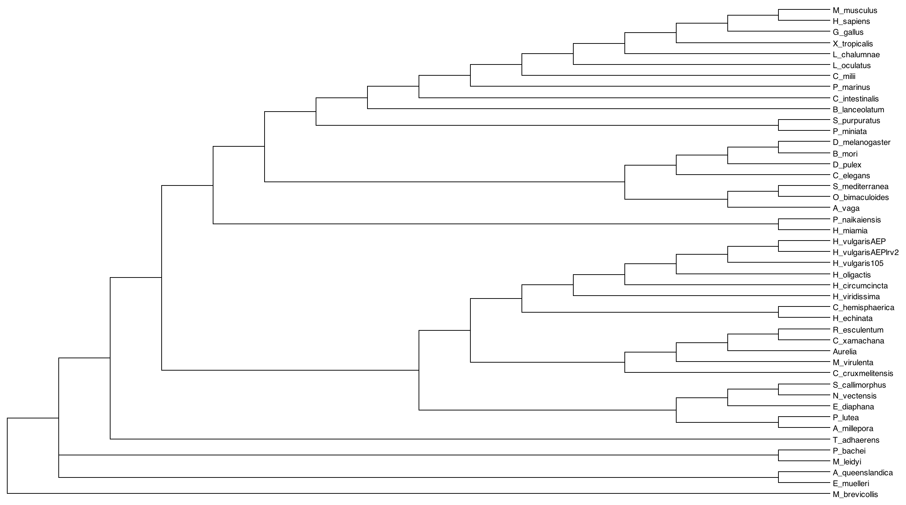
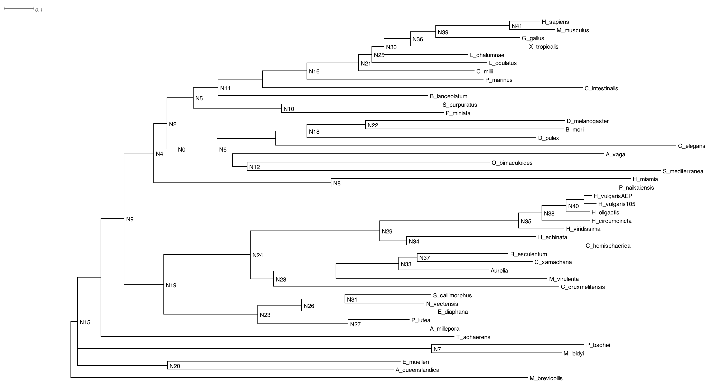

AEP Genome Gene Model Generation
This document covers the generation of gene models for the strain AEP H. vulgaris genome assembly from repeat annotation to final gene models. It also covers the generation of functional annotations for the AEP gene models. Finally, this document describes the approach to benchmark ATAC-seq and RNA-seq read mapping efficiency for the 105 and AEP assemblies. The starting point for this document is the finalized, non-masked AEP assembly. The creation of which is described in 01_aepGenomeAssembly.md.
This gene model prediction process entailed generating an initial set of annotations with BRAKER2 using protein hints from a custom metazoan proteome database and transcript hints using whole animal Hydra RNA-seq data. We then supplemented these gene models with a second set of predictions generated with exonerate using the Hydra LRv2 transcriptome and a custom database of Hydra GenBank mRNA sequences. The final set of gene models was generated with the PASA pipeline by using a new transcriptome assembly to augment the splice isoform and UTR annotations. We generated functional annotations using OrthoFinder, InterProScan, and BLAST searches.
AEP Genome Gene Model GenerationGenerating Hints for Gene PredictionsTranscriptomic HintsAligning Whole-Animal RNA-seq Data to the AEP AssemblyGenerating an AEP Transcriptome for Use in Gene PredictionsCompiling a Protein Hints DatabaseTranslating transcriptome sources into proteomesCreating a Custom Protein Database to Guide ORF SelectionTranslating the H. echinata transcriptomeTranslating Brown Hydra TranscriptomesFinal Proteome Compilation and FormatingPerforming Ab Initio Gene PredictionsReformating/Fixing Braker2 GFF3 FilesSupplementing Gene Models Using ExonerateCompiling the Input Sequences to Be Used for AlignmentPipeline for Generating Gene Models from Exonerate AlignmentsRunning the Exonerate PipelineCurating and Combining Exonerate and Braker2 Gene ModelsMerging the Braker2 and Exonerate Gene ModelsRemoving TEs and Short Gene ModelsRenaming Gene ModelsUpdating Gene Models with PASAPolishing and Finalizing Gene ModelsGenerating Functional AnnotationsPredicting Protein Domains Using InterProScanPredicting Orthology Using OrthoFinderBLASTing Against UniProt and GenBankCombining Different Annotation SourcesBenchmarking Mapping Statistics for the AEP and 105 Genome AssembliesAligning Whole-Animal RNA-seq Data to the AEP and 105 Reference GenomesAligning Whole-Animal ATAC-seq Data to the AEP and 105 Reference GenomesPlotting Differences in Mapping RatesFiles Associated with This Document
Generating Hints for Gene Predictions
Transcriptomic Hints
Aligning Whole-Animal RNA-seq Data to the AEP Assembly
To provide transcriptomic data for the gene prediction software, we made use of four paired end whole animal RNA-seq libraries generated from various AEP-derived transgenic lines. In the file names below, W indicates data from the watermelon line, O indicates data from the operon line, IW indicates data from the inverse watermelon line, and E indicates data from the enGreen1 line.
xxxxxxxxxxWHOLE_W_CGATGT_L006_R2_all.fastq.gzWHOLE_W_CGATGT_L006_R1_all.fastq.gzWHOLE_O_ACAGTG_L006_R2_all.fastq.gzWHOLE_O_ACAGTG_L006_R1_all.fastq.gzWHOLE_IW_TGACCA_L006_R2_all.fastq.gzWHOLE_IW_TGACCA_L006_R1_all.fastq.gzWHOLE_E_GCCAAT_L006_R2_all.fastq.gzWHOLE_E_GCCAAT_L006_R1_all.fastq.gzIn addition we generated two PE RNA-seq libraries from whole male and female Kiel AEP polyps (non-transgenic):
xxxxxxxxxxF3_S21_L001_R1_001.fastq.gzF3_S21_L001_R2_001.fastq.gzM3_S22_L001_R2_001.fastq.gzM3_S22_L001_R1_001.fastq.gzPrior to performing the analysis the file names were simplified as follows:
xxxxxxxxxxW_R1.fastq.gzW_R2.fastq.gzO_R1.fastq.gzO_R2.fastq.gzIW_R1.fastq.gzIW_R2.fastq.gzE_R1.fastq.gzE_R2.fastq.gzF3_R1.fastq.gzF3_R2.fastq.gzM3_R1.fastq.gzM3_R2.fastq.gzReads were then processed with trimmomatic (v0.36) to remove low quality base calls and sequencing adapter contamination
(01_prepHints/trim.sh)
xxxxxxxxxx#SBATCH --job-name=trim#SBATCH -c 32#SBATCH -t 60-0#SBATCH --mem=36G#SBATCH --error=trim.err#SBATCH --output=trim.out
module load trimmomatic
prefixes=( E F3 IW M3 O W )
for arg in "${prefixes[@]}"do java -jar /share/apps/Trimmomatic-0.36//trimmomatic-0.36.jar PE -threads 32 \ reads/"$arg"_R1.fastq.gz reads/"$arg"_R2.fastq.gz \ reads/"$arg"_R1_trim_p_fq.gz reads/"$arg"_R1_trim_up_fq.gz \ reads/"$arg"_R2_trim_p_fq.gz reads/"$arg"_R2_trim_up_fq.gz \ ILLUMINACLIP:./adapters.fa:2:30:10:2:keepBothReads LEADING:3 TRAILING:3 MINLEN:36doneFollowing processing, R1 and R2 files were pooled:
xxxxxxxxxxcat *1_trim_p*gz > combined_R1.fq.gzcat *2_trim_p*gz > combined_R2.fq.gzWe then prepped the AEP genome (with interspersed repeats hard-masked) for mapping with STAR (v2.7.5c)
(01_prepHints/makeRef.sh)
xxxxxxxxxx#SBATCH --job-name=makeRef#SBATCH -c 24#SBATCH -t 60-0#SBATCH --mem=36G#SBATCH --error=makeRef.err#SBATCH --output=makeRef.out#SBATCH -p med
STAR --version
STAR --runThreadN 24 \ --runMode genomeGenerate \ --genomeDir ./ref \ --genomeFastaFiles aep.genome.cplxmask.fa \ --genomeSAindexNbases 13Next, we mapped the reads to the genome:
(01_prepHints/runAlign.sh)
xxxxxxxxxx#SBATCH -p med #SBATCH --job-name=align#SBATCH -t 60-0#SBATCH --nodes=1#SBATCH --mem=0#SBATCH --exclusive#SBATCH --error=align.err#SBATCH --output=align.out
STAR --version
STAR --runThreadN 20 \ --genomeDir ./ref \ --readFilesIn ../reads/combined_R1.fq.gz ../reads/combined_R2.fq.gz \ --readFilesCommand gunzip -c \ --outFileNamePrefix ./out/aep \ --outSAMprimaryFlag AllBestScore \ --outSAMtype BAM SortedByCoordinate \ --twopassMode Basic \ --outFilterScoreMinOverLread 0.3 \ --outFilterMatchNminOverLread 0.3 \ --limitBAMsortRAM 12316579964Generating an AEP Transcriptome for Use in Gene Predictions
To aid in later genome annotation steps we also generated a transcriptome using this genome-mapped RNA-seq data. Although we had already generated an AEP transcriptome (LRv2 transcriptome, Siebert et al., 2019), it was not produced using any data from animals undergoing gametogenesis. This could possibly cause us to miss some transcripts specific to male or female polyps. In addition, the transcriptome was designed to have 'low redundancy', and may have omitted some splicing complexity.
We therefore sought to generate a new transcriptome that both incorporated reads from polyps producing gametes and included the full possible transcriptomic complexity in adult Hydra.
To generate the transcriptome, the mapped reads from the previous section were provided as input to the Trinity reference-guided transcriptome assembly pipeline (v2.11.0)
(01_prepHints/runTrinity.sh)
xxxxxxxxxx#SBATCH -p med#SBATCH --job-name=trinity#SBATCH -c 24#SBATCH -t 60-0#SBATCH --mem=0#SBATCH --error=trinity.err#SBATCH --output=trinity.out
source ~/perl5/perlbrew/etc/bashrc
source venv/bin/activate
module load jellyfish
which perl
which bowtie2
$TRINITY_HOME/Trinity --genome_guided_bam ../align/out/aepAligned.sortedByCoord.out.bam \ --genome_guided_max_intron 20000 \ --max_memory 60G --CPU 24 \ --SS_lib_type RFQuantifying BUSCO (v5.beta_cv1) metrics for the transcriptome indicated high levels of redundancy (to be expected in a relatively unprocessed transcriptome), but high levels of overall completeness:
xxxxxxxxxxdocker run -u $(id -u) -v $(pwd):/busco_wd ezlabgva/busco:v5.beta_cv1 busco -c 4 -m tran -i Trinity-GG.fasta -o trinity -l metazoa_odb10 -f
C:95.8%[S:54.1%,D:41.7%],F:0.8%,M:3.4%,n:954 914 Complete BUSCOs (C) 516 Complete and single-copy BUSCOs (S) 398 Complete and duplicated BUSCOs (D) 8 Fragmented BUSCOs (F) 32 Missing BUSCOs (M) 954 Total BUSCO groups searched Compiling a Protein Hints Database
Protein sequences from both closely and distantly related species can also provide valuable guides for gene prediction software. Our goal was to make use of diverse metazoan proteomes, with a particular focus on cnidarian species. We downloaded the following proteomes to serve as hints for gene prediction:
x
A_diaphana.fa https://ftp.ncbi.nlm.nih.gov/genomes/refseq/invertebrate/Exaiptasia_diaphana/latest_assembly_versions/GCF_001417965.1_Aiptasia_genome_1.1/
A_queenslandica.fa https://metazoa.ensembl.org/Amphimedon_queenslandica/Info/Index
A_vaga.fa https://metazoa.ensembl.org/Adineta_vaga/Info/Index
B_lanceolatum.fa https://metazoa.ensembl.org/Branchiostoma_lanceolatum/Info/Index
B_mori.fa https://metazoa.ensembl.org/Bombyx_mori/Info/Index
C_elegans.fa https://uswest.ensembl.org/Caenorhabditis_elegans/Info/Index
C_hemisphaerica.fa http://marimba.obs-vlfr.fr/node/237574
C_intestinalis.fa https://uswest.ensembl.org/Ciona_intestinalis/Info/Index
C_milii.fa https://uswest.ensembl.org/Callorhinchus_milii/Info/Index
D_melanogaster.fa https://uswest.ensembl.org/Drosophila_melanogaster/Info/Index
D_pulex.fahttps://metazoa.ensembl.org/Daphnia_pulex/Info/Annotation/
E_muelleri.fa https://spaces.facsci.ualberta.ca/ephybase/
G_gallus.fa https://uswest.ensembl.org/Gallus_gallus/Info/Index
H_circumcincta.fa (obtained from authors of the study via personal communication)https://www.pnas.org/content/116/46/22915
H_echinata.fa https://research.nhgri.nih.gov/hydractinia/
H_miamia.fahttps://metazoa.ensembl.org/Hofstenia_miamia/Info/Index?db=core
H_oligactis.fa (obtained from authors of the study via personal communication)https://www.pnas.org/content/116/46/22915
H_sapiens.fa https://uswest.ensembl.org/Homo_sapiens/Info/Index
H_viridissima.fahttps://marinegenomics.oist.jp/hydra_viridissima_a99/viewer/download?project_id=82
H_vulgaris105.fahttps://arusha.nhgri.nih.gov/hydra/download/genemodels_proteins/hydra2.0_genemodels.aa.gz
H_vulgarisZurich.fa (obtained from authors of the study via personal communication)https://www.pnas.org/content/116/46/22915
L_chalumnae.fahttps://uswest.ensembl.org/Latimeria_chalumnae/Info/Index
L_oculatus.fahttps://uswest.ensembl.org/Lepisosteus_oculatus/Info/Index
M_leidyi.fahttps://research.nhgri.nih.gov/mnemiopsis/download/download.cgi?dl=proteome
M_virulenta.fahttps://marinegenomics.oist.jp/morbakka_virulenta/viewer/download?project_id=70
N_vectensis.fa https://simrbase.stowers.org/
O_bimaculoides.fahttps://metazoa.ensembl.org/Octopus_bimaculoides/Info/Index
P_bachei.fa https://neurobase.rc.ufl.edu/Pleurobrachia/download
P_marinus.fa https://uswest.ensembl.org/comm_marinus
P_miniata.fa http://legacy.echinobase.org/Echinobase/PmDownload
P_naikaiensis.fahttp://gigadb.org/dataset/100564
S_callimorphus.fahttps://simrbase.stowers.org/
S_mediterranea.fahttps://planosphere.stowers.org/smedgd
S_purpuratus.fahttps://metazoa.ensembl.org/Strongylocentrotus_purpuratus/Info/Index
T_adhaerens.fahttp://metazoa.ensembl.org/Trichoplax_adhaerens/Info/Index
X_tropicalis.fa https://uswest.ensembl.org/Xenopus_tropicalis/Info/IndexTranslating transcriptome sources into proteomes
Notably the files H_vulgarisZurich.fa, H_oligactis.fa, H_circumcincta.fa, and H_echinata.fa were transcriptomes, and therefore needed to be translated into protein sequences first. We translated these files using Transdecoder.
Creating a Custom Protein Database to Guide ORF Selection
To guide Transdecoder's selection of possible reading frames, we used BLAST results from a custom protein database.
To generate the BLAST (v2.10.0+) database, we started with the metazoan orthoDB database:
xxxxxxxxxxwget https://v100.orthodb.org/download/odb10_metazoa_fasta.tar.gztar xzvf odb10_metazoa_fasta.tar.gzcat metazoa/Rawdata/* > proteins.farm -r odb10_metazoa_fasta.tar.gz metazoa/We then supplemented these sequences with refseq mRNA entries from cnidarians (excluding Hydra), which were retrieved using the following query on refseq:
srcdb_refseq[prop] AND ("Cnidaria"[Organism] AND biomol_mrna[PROP]) NOT "Hydra vulgaris"[Organism]
Sequences returned by this query were downloaded into the file cnido_prot_sequence.fa
Before we pooled cnido_prot_sequence.fa and proteins.fa, we first removed all proteins in cnido_prot_sequence.fa that were already present in proteins.fa using CD-hit (with a 95% sequence similarity threshold; CD-hit version v4.7):
(01_prepHints/protFilt.sh)
xxxxxxxxxx#SBATCH --job-name=cdhit#SBATCH -p bigmemh#SBATCH --exclusive#SBATCH --nodes=1#SBATCH -t 60-0#SBATCH --mem=0#SBATCH --error=cdhit.err#SBATCH --output=cdhit.out
cd-hit-2d -i proteins.fa -i2 cnido_prot_sequence.fa -o cdhit.out -c 0.95 -M 360000 -T 0 -s2 0.9Finally, we pooled proteins.fa and cnido_prot_sequence.fa to make a final proteins.fa file (the old proteins.fa file was removed).
Translating the H. echinata transcriptome
After compiling proteins.fa we used it to generate a BLAST-able database:
makeblastdb -in proteins.fa -dbtype nucl -title proteins -out proteins
We then ran TransDecoder (v5.2.0) on the H. echinata transcriptome and incorporated BLAST results for the candidate peptide sequences when compared to the protein database:
(01_prepHints/transDecoderHech.sh)
xxxxxxxxxx#SBATCH -p med#SBATCH --job-name=TD#SBATCH -c 24#SBATCH -t 60-0#SBATCH --mem=60G#SBATCH --error=TD.err#SBATCH --output=TD.out
module load TransDecoder/5.2.0
TransDecoder.LongOrfs -t Hech-trinity.fa
echo "blasting"
~/bin/blastp -query Hech-trinity.fa.transdecoder_dir/longest_orfs.pep \ -db proteins -max_target_seqs 1 \ -outfmt 6 -evalue 1e-5 -num_threads 24 > blastpHeck.outfmt6
TransDecoder.Predict -t Hech-trinity.fa --single_best_only --retain_blastp_hits blastpHeck.outfmt6Translating Brown Hydra Transcriptomes
We used essentially the same approach for the brown Hydra transcriptomes, although we used diamond (v2.0.6) instead of BLAST to speed things up.
To make the diamond database from proteins.fa:
diamond makedb -d proteins --in proteins.fa
We first reduced the redundancy in the Hydra transcriptomes using CD-hit:
xxxxxxxxxxcd-hit -i H_vulgarisZurich.fa -o zu.cdhit.fa -c 0.95cd-hit -i H_oligactis.fa -o oli.cdhit.fa -c 0.95cd-hit -i H_circumcincta.fa -o cir.cdhit.fa -c 0.95We then ran TransDecoder using the following script:
(01_prepHints/transDecoderClose.sh)
xxxxxxxxxx#SBATCH -p med#SBATCH --job-name=TD#SBATCH -c 24#SBATCH -t 60-0#SBATCH --mem=60G#SBATCH --error=TD.err#SBATCH --output=TD.out
module load TransDecoder/5.2.0
for arg in *cdhit.fado echo "$arg"
TransDecoder.LongOrfs -t "$arg"
diamond blastp --query "$arg".transdecoder_dir/longest_orfs.pep \ --db ../proteins --max-target-seqs 1 \ --outfmt 6 --evalue 1e-5 -p 24 --sensitive > blastp.outfmt6
TransDecoder.Predict -t "$arg" --single_best_only --retain_blastp_hits blastp.outfmt6doneFor all Transdecoder runs, the resulting .pep file was used as the proteomes from these species for downstream applications.
Final Proteome Compilation and Formating
After generating all the individual protein fasta files, we used a script provided as part of a standard Orthofinder (v2.5.4) installation (primary_transcript.py) to extract primary isoforms from each file (this is mainly needed for Ensemble-sourced files). We also removed stop codon symbols from the proteomes. The output was directed into a subdirectory called primary_transcripts.
xxxxxxxxxxfor f in *fa ; do gsed -i 's/\(^[^>].*\)\*/\1/g' $f ; donefor f in *fa ; do gsed -i 's/\(^[^>].*\)\./\1/g' $f ; done
for f in *fa ; do python /Users/Jcazet/opt/anaconda3/envs/workingEnv/bin/primary_transcript.py $f ; done
cd primary_transcripts
for f in *fa ; do gsed -i 's/\(^>[^ \|]\+\).*/\1/g' $f ; doneFiles in the primary transcripts were then concatenated into the file allPrimProts.fa
Finally, atypical non-AA characters were removed to prevent parsing errors later on:
sed -i -e '/^[^>]/s/[^AaRrNnDdCcEeQqGgHhIiLlKkMmFfPpSsTtWwYyVvBbZzJjXx]/X/g' allPrimProts.fa
Performing Ab Initio Gene Predictions
We next used BRAKER2 (v2.1.5) to generate gene models using hints provided by our new transcriptome, proteomic database, and genome-mapped RNA-seq data.
Note: The file aepAligned.sortedByCoord.out.bam created by STAR after mapping the RNA-seq data to the genome was renamed to rna.bam
(02_braker2/brakerScript.sh)
xxxxxxxxxx
braker.pl --genome=aep.final.genome.full.softmask.fa \ --prot_seq=allPrimProts.fa \ --bam=rna.bam \ --etpmode \ --softmasking \ --cores 48 \ --species=HyVul \ --AUGUSTUS_CONFIG_PATH=/home/jacazet/reference/makerAnnotations/aepAnnot/maker_braker/braker/config \ --AUGUSTUS_BIN_PATH=/home/Augustus/bin \ --AUGUSTUS_SCRIPTS_PATH=/home/Augustus/scripts \ --gff3The script above was executed on the cluster within a Singularity container on which BRAKER2 was installed
(02_braker2/runBraker.sh)
xxxxxxxxxx#SBATCH --job-name=braker#SBATCH -p bigmemh#SBATCH -c 48#SBATCH -t 60-0#SBATCH --mem=360G#SBATCH --error=braker.err#SBATCH --output=braker.out
module load singularity
singularity exec -H "/home/jacazet" -B /home/jacazet/reference/makerAnnotations/aepAnnot/maker_braker/braker ~/braker2_2.1.5.sif ./brakerScript.shReformating/Fixing Braker2 GFF3 Files
BRAKER2 incorporates gene model predictions from both GeneMark and Augustus. Unfortunately the GeneMark models were improperly formatted in the GFF3 file produced by BRAKER2, in that they all lacked mRNA/transcript and gene rows for the gene models. In addition, some Augustus predictions also lacked mRNA rows, and all Augustus predictions lacked gene rows. We used the following R script to fix that issue
(02_braker2/brakerFixGname.R)
x
library(rstudioapi)
#set the working directory to be the folder in which this script is locatedsetwd(dirname(getActiveDocumentContext()$path))
gffIn <- read.delim("braker.gff3", header = F)
#pull out only those rose that are from genemark predictions (these are the problem ones)gffIn.GM <- gffIn[grepl('GeneMark.hmm',gffIn$V2),]
#id the parent gene for each rowgffIn.GM$parent <- gsub('.*Parent=','',gffIn.GM$V9)
#remove gene models with incomplete ORFs that lack a start codongffIn.GM <- gffIn.GM[gffIn.GM$parent %in% gffIn.GM[gffIn.GM$V3 == 'start_codon','parent'],]
#split dataframe by parent ID (groups rows by gene model)gffIn.GM <- split(gffIn.GM,gffIn.GM$parent)
#now we need to add an mRNA row for each gene modelgffIn.GM <- lapply(gffIn.GM, function(x) { newDF <- x #pick an arbitrary row that we will remake into an mRNA row mRow <- newDF[1,] #extract parent ID for gene model in this DF #this is the basis for the gene name pID <- gsub(';','',newDF[1,'parent']) #set the start and end to encompass the full span of all rows for this gene prediction mRow[,4] <- min(newDF[,4]) mRow[,5] <- max(newDF[,5]) #rename feature type mRow[,3] <- 'mRNA' mRow[,6] <- '.' mRow[,8] <- '.' #give the mRNA row the proper mRNA ID in the tags column mRow[,9] <- paste0('ID=',pID,'-mRNA-1;Parent=',pID) #we also need to create a gene row #(the GM predictions only have one isoform, so the gene entry is identical to the mRNA entry) gRow <- mRow gRow[,9] <- paste0('ID=',pID) gRow[,3] <- 'gene' #make sure all the rows for CDS, exons, etc. have the new transcript ID for their parent tag newDF[,9] <- gsub(paste0('Parent=',pID),paste0('Parent=',pID,'-mRNA-1'),newDF[,9]) #combine everything newDF <- rbind(gRow,mRow,newDF) #link all the rows with the gene ID newDF[,9] <- paste0(newDF[,9],'gene_id=',pID) #delete temp parent column newDF$parent <- NULL return(newDF)})
#compile the fixed gene models into a DFgffIn.GM <- do.call(rbind,gffIn.GM)
#drop the old, improperly formated versions of the GM modelsgffIn <- gffIn[!grepl('GeneMark.hmm',gffIn$V2),]
#all the Augustus models lack a gene row, and some of them also lack a mRNA row#so we need to fix that too
#extract the gene IDs for all rowsgffIn$gID <- gffIn$V9
gffIn$gID <- gsub(';.*','',gffIn$gID)gffIn$gID <- gsub('[.]t.*','',gffIn$gID)gffIn$gID <- gsub('ID=','',gffIn$gID)
#there are some weird rows that I don't understand, so let's just drop themgffIn <- gffIn[!(gffIn$V3 %in% c('initial','terminal','internal')),]
#split augustus models into a list of DFs grouped by gene IDgffInList <- split(gffIn, gffIn$gID)
gffInList <- lapply(gffInList, function(x) { old.df <- x #check if the augustus models have an mRNA row #if they don't, add them (same approach as above) if(length(old.df[old.df$V3 == 'mRNA',1]) == 0) { mRow <- old.df[1,] mRow[,3] <- 'mRNA' mRow[,4] <- min(old.df$V4) mRow[,5] <- max(old.df$V5) mRow[,6] <- '.' mRow[,8] <- '.' mRow[,9] <- paste0('ID=',old.df[1,10],'.t1;Parent=',old.df[1,10],';') #also add a gene row gRow <- mRow gRow[,9] <- paste0('ID=',old.df[1,10],';') gRow[,3] <- 'gene' new.df <- rbind(gRow,mRow,old.df) } else { #if there's already an mRNA row, then just add the gene row gRow <- old.df[old.df$V3 == 'mRNA',][1,] gRow[,9] <- paste0('ID=',old.df[1,10],';') gRow[,3] <- 'gene' gRow[,4] <- min(old.df$V4) gRow[,5] <- max(old.df$V5) new.df <- rbind(gRow,old.df) } new.df$V9 <- paste0(new.df$V9,'gene_id=',old.df[1,10],';') return(new.df)})
#re-order the gene models so they are consecutivegffInList <- gffInList[order(as.numeric(gsub('.*g','',names(gffInList))))]
#combine list of DFs into single DFnewGff <- do.call(rbind,gffInList)#drop temp gene ID rownewGff$gID <- NULL
#combine augustus and GM gene modelsnewGff <- rbind(newGff,gffIn.GM)
#export reformated GFF3write.table(newGff, file = 'braker.fix.gff3', row.names = F, col.names = F, sep = '\t', quote = F)Some BRAKER2 gene models included incomplete ORFs with internal stop codons, which we had to filter out. For this step we used a perl script (transcript_keeper.pl) from a very useful repo of genome annotation tools to retain only the complete gene models. We also used several other tools from this repo throughout the annotation process.
xxxxxxxxxx#generate AA sequences from the Braker GFF3 filegffread -g aep.final.genome.fa -y braker.allprots.fa braker.fix.gff3 #get the IDs of gene models that don't have internal stop codonsseqkit grep -v -s -r -p "^[^>].*\.[^$]" braker.allprots.fa | grep ">" | sed 's/>//g' > completeBrakerTranscripts.txt#Generate a new GFF3 file that only includes complete ORFscd ../ && perl transcript_keeper.pl gm/completeBrakerTranscripts.txt gm/braker.fix.gff3 > gm/braker.fix.gff3.tmp && cd gmmv braker.fix.gff3.tmp braker.fix.gff3gffread -g aep.final.genome.fa -y braker.prots.fa braker.fix.gff3 We generated some stats for these initial gene models. First we looked at the number of Genes/transcripts, exon length, etc.
xxxxxxxxxxperl look_at_transcripts.pl gm/braker.fix.gff3 xxxxxxxxxxmedian cds length 657median transcript length 663median five prime UTR length 0median three prime UTR length 0median exon length 119median intron length 556total gene count 33683total transcripts 36084total unique transcripts 36084total unique cds 36084
number of genes with five prime UTR 0number of genes with three prime UTR 0number of trans with five prime UTR 0number of trans with three prime UTR 0We also looked at BUSCO stats:
xxxxxxxxxxdocker run -u $(id -u) -v $(pwd):/busco_wd ezlabgva/busco:v5.beta_cv1 busco -c 6 -m prot -i braker.prots.fa -o braker -l metazoa_odb10 -f
C:92.9%[S:82.0%,D:10.9%],F:3.0%,M:4.1%,n:954 886 Complete BUSCOs (C) 782 Complete and single-copy BUSCOs (S) 104 Complete and duplicated BUSCOs (D) 29 Fragmented BUSCOs (F) 39 Missing BUSCOs (M) 954 Total BUSCO groups searched Supplementing Gene Models Using Exonerate
The stats for the Braker2 gene models were quite good; however, the number of complete BUSCOs was somewhat lower than the genome-guided transcriptome we had produced, which suggested that there were additional BUSCOs in our genome that weren't being annotated. We therefore wrote a custom pipeline to produce gene models from nucleotide alignments generated by exonerate (v2.2.0). This would allow us to use as input our previous 'gold standard' annotation (the LRv2 transcriptome) as well as any manually deposited Hydra GenBank entries to supplement the BRAKER2 annotations, hopefully filling in some of the gaps in the annotation.
Compiling the Input Sequences to Be Used for Alignment
We wanted to include manually deposited Hydra GenBank sequences because all of those sequences were experimentally validated in some way, making them high quality coding sequence predictions. To get these sequences from GenBank we started with this query on NCBI:
"Hydra vulgaris"[porgn] AND (biomol_mrna[PROP] AND ddbj_embl_genbank[filter])
We downloaded the results as a multi-genbank file (downloaded on November 13, 2020) . This file contained a large number of procedurally deposited GenBank entries that had not been experimentally validated. We filtered out those entries and exported the remaining nucleotide sequences using the following python script:
(03_exonerate/hydraAnnotations.py)
xxxxxxxxxx#!/usr/bin/env python3# -*- coding: utf-8 -*-"""Created on Sat Nov 14 10:04:21 2020
@author: Jcazet"""from Bio import SeqIOimport re
gb = SeqIO.parse('/Users/Jcazet/Google_Drive/Juliano_lab/References/genbank/"Hydra vulgaris"[porgn] AND (biomol_mrna[PROP] AND ddbj_embl_genbank[filter]).gb', "genbank")
# c = 0
gbKeep = []
while True: try: f = next(gb) except StopIteration: break else: tests = [] tests.append(re.search('est project', f.annotations['references'][0].title, re.IGNORECASE)) tests.append(re.search('rna interference', f.annotations['references'][0].title, re.IGNORECASE)) tests.append(re.search('Hydra vulgaris cDNAs', f.annotations['references'][0].title, re.IGNORECASE)) tests.append(re.search('Comparative analysis of septic', f.annotations['references'][0].title, re.IGNORECASE)) if all(v is None for v in tests): f.description = re.sub(r'\, .*cds$',r'',f.description, re.IGNORECASE) # print(f.description) f.description = f.description + '|' + f.annotations['references'][0].title f.id = f.id + '|' gbKeep.append(f)
SeqIO.write(gbKeep, "/Users/Jcazet/Google_Drive/Juliano_lab/References/genbank/hydraAnnotations.gb","gb")SeqIO.write(gbKeep, "/Users/Jcazet/Google_Drive/Juliano_lab/References/genbank/hydraAnnotations.fasta","fasta")We then combined these sequences with the aep LRv2 transcriptome to generate the input for our alignment pipeline.
cat hydraAnnotations.fasta aepLRv2.fasta > query.fa
Pipeline for Generating Gene Models from Exonerate Alignments
In principle, the pipeline is simple, in that Exonerate can take an mRNA sequence and a genome sequence as input and output gene model coordinates in a GFF format; however, there are multiple complications when actually implementing this approach. First, the specific Exonerate algorithm that produces high-quality alignments (cdna2genome) is prohibitively slow when given a genome-sized search space. Second, Exonerate has finicky input requirements, including a requirement for a file that specifies the ORF coordinates for a given input transcript. Third, the GFF files produced by Exonerate need extensive formatting fixes.
Pipeline software versions for software not yet mentioned:
BedTools v2.30.0, EMBOSS v6.6.0.0, agat v0.6.1
The pipeline script is provided below:
(03_exonerate/gbMap.sh)
x
source ~/.bash_profile
#The only input for the pipeline script is the name of a file #within a subdirectory called query.fa.split/fileN="$1"
fileN="${fileN/query.fa.split\//}"
#here we define a run name, derived from the input file namerunN="${fileN/.fa/}"
#we'll make an output folder named after the run name to put our outputmkdir "$runN"
cd "$runN"
echo "$runN"
echo "$fileN"
#many of the fasta sequences in the input sequences have long headers with characters#that can cause parsing errors. These long headers have useful information though,#so we just pull out the full headers to set aside, then truncate the headers in our actual#input filesgrep ">" ../query.fa.split/"$fileN" > headers.txt
sed 's/|.*//g' ../query.fa.split/"$fileN" > inSeqs.r.fa
#using cd-hit to get rid of any possibly redundant sequences in the inputcd-hit -i inSeqs.r.fa -o inSeqs.fa -c 0.95 -G 0 -aL 0.8
#now we split the multi-fasta into individual files#which we'll then iterate through one by oneseqkit split --quiet -i -f -O subseqs inSeqs.fa
#initialize empty output filesecho -n > fullRes.gff3
echo -n > rawExo.txt
echo -n > reformatted.gff
#iterate through each sequence from the input filefor arg in subseqs/*fado #extract the sequence ID from it's file name name=$(echo "$arg" | sed "s/subseqs\/inSeqs.id_//g;s/.fa//g") echo $name #Exonerate's cdna2genome algorithm can produce high quality alignments, but #it's also prohibitively slow when it has to deal with a genome-sized search #space. We use basically the same solution as the MAKER pipeline, and use an #initial BLAST search to produce a rough alignment that we can use to #identify the general coordinates for the target gene. Then we can generate a #high quality Exonerate alignment based on a much smaller search space. blastn -query $arg -db ../AEPgenome -outfmt '17 SR' -max_target_seqs 1 > out.sam #if BLAST produced no alignments, move on to the next query sequence if [ ! -s out.sam ] then continue fi #take the SAM alignments from blast and output the genomic sequence that spans #the entirety of the alignment samtools view -b out.sam | \ bedtools bamtobed -tag AS -i - | \ sort -k1,1 -k2,2n | \ #merge nearby alignments into a single chunk #have to be within 20Kb (max intron size) bedtools merge -c 5 -o sum -d 20000 -s -i - | sort -k 4 | \ tail -n 1 | \ #add 20 Kb on either side of chunk for good measure bedtools slop -i - -g ../aep.genome -b 20000 | bedtools getfasta -fi ../aep.genome.fullsoft.fa -bed - \ > searchSpace.fa #pull all possible ORF coordinates from transcript sequence getorf $arg orfList.txt -find 1 #pull out coordinates for the longest ORF seqkit sort --quiet -l -r orfList.txt | \ head -n 1 | \ sed 's/.*\[//g;s/\]//g;s/- //g' > coords.txt #reformat coordinates to work with Exonerate (need to include stop codon in total length) /usr/bin/Rscript ../addStopCoord.R coords.txt rm orfList.txt #final ORF coords reformatting echo $name "+" | \ cat - coords.txt | \ tr '\n' ' ' > annot.txt rm coords.txt #run the actual exonerate algorithm exonerate -q $arg \ -t searchSpace.fa \ -E TRUE \ -m cdna2genome \ --percent 25 \ --showalignment FALSE \ --showvulgar FALSE \ --showtargetgff TRUE \ -n 1 \ -S FALSE \ --annotation annot.txt \ --softmasktarget TRUE \ --seedrepeat 4 \ --geneseed 250 | \ sed 's/utr3b/utr3/g;/^#[^#]/d;/^#$/d;/similarity/d' > exo.txt #exonerate outputs a lot of additional text beyond just the GFF that we need to get rid of csplit -f hit exo.txt '/gff-version/' '{*}' cat exo.txt >> rawExo.txt rm hit00 #if exonerate produced no alignments then move on to the next query sequence if [ ! -f hit01 ] then continue fi #this script fixes the all the formatting problems with the exonerate GFF output /usr/bin/Rscript ../reformatGff.R hit01 sed -i '/^##/d' hit01.gff cat hit01.gff >> reformatted.gff
echo "##gff-version 2" | cat - hit01.gff > geneRes.gff #delete UTR rows, we'll add them back in later using AGAT #(does a better job with formatting/accuracy) sed '/utr5/d;/utr3/d' geneRes.gff > geneRes.utr.gff conda activate agatEnv
agat_convert_sp_gxf2gxf.pl -g geneRes.utr.gff \ -c "gene_id" \ -gvi 2 \ -gvo 3 \ -o geneRes.gff3 conda deactivate #final tweaks to add proper parent ID to gene model /usr/bin/Rscript ../fixParents.R geneRes.gff3 rm hit0* #add result to full list of gene models cat geneRes.pfix.gff3 >> fullRes.gff3 doneThis script uses several supplemental Rscripts, primarily for reformatting text files.
The accessory script below fixes formatting issues with Exonerate's GFF output. In addition it converts the coordinates into their proper genomic equivalents (in the initial output the coordinates are relative to the small stretch of sequence used for the alignment).
(03_exonerate/reformatGff.R)
xxxxxxxxxxargs <- commandArgs(trailingOnly = T)
inGff <- read.delim(file = args[1], sep = "\t", stringsAsFactors = F, header = F)
inGff <- inGff[!grepl("^#",inGff$V1),]inGff <- inGff[!grepl("^-",inGff$V1),]
stCoord <- gsub(".*:","",inGff[1,1])stCoord <- as.numeric(gsub("-.*","",stCoord))
inGff$V4 <- inGff$V4 + stCoordinGff$V5 <- inGff$V5 + stCoord
inGff$V1 <- gsub(":.*","",inGff$V1)
gName <- inGff[grepl("gene",inGff$V3),9]gName <- gsub(".*sequence ","",gName)gName <- gsub(" ;.*","",gName)
inGff$V9 <- gsub("gene_id 0 ; ","",inGff$V9)
gName <- paste0(" ; gene_id ",gName)
inGff$V9 <- paste0(inGff$V9,gName)inGff$V9 <- gsub("^ ; ","",inGff$V9)
end5 <- inGff[inGff$V3 == 'utr5',5]end5 <- max(end5)
if(inGff[1,7] == '+') { inGff[inGff$V3 == 'cds' & inGff$V4 <= end5,4] <- end5 + 1}
end5 <- inGff[inGff$V3 == 'utr5',4]end5 <- min(end5)
if(inGff[1,7] == '-') { inGff[inGff$V3 == 'cds' & inGff$V5 >= end5,5] <- end5 - 1}
write.table(file = paste0(args[1],".gff"), inGff, sep = "\t", quote = F, row.names = F, col.names = F)The accessory script below fixes the coordinates for ORFs generated by getorf in part by including the stop codon in the final ORF coordinates.
(03_exonerate/addStopCoord.R)
xxxxxxxxxxargs <- commandArgs(trailingOnly = T)
inCoords <- read.delim(args[1], header = F, sep = " ", stringsAsFactors = F)
inCoords$V3 <- NULL
inCoords$V2 <- inCoords$V2 + 3
inCoords$V2 <- inCoords$V2 - inCoords$V1
write.table(inCoords, file = args[1], sep = " ", quote = F, row.names = F, col.names = F)The accessory script below makes sure all of the gene and mRNA IDs are uniformly formatted following the AGAT conversion to GFF3. It also makes sure all rows associated with a gene model have the appropriate parent ID.
(03_exonerate/fixParents.R)
xxxxxxxxxxoptions(stringsAsFactors = F)args <- commandArgs(trailingOnly = T)
inGff <- read.delim(args[1], sep = "\t", skip = 1, header = F)
gName <- inGff[inGff$V3 == "gene"[1],9]
gName <- gsub("ID=","",gName)gName <- gsub(";.*","",gName)
inGff$V3 <- gsub("^RNA$","mRNA",inGff$V3)badRNA <- which(inGff$V3 == "mRNA")
for(i in badRNA) { badFormat <- gsub('.*Parent=([^;]*);.*',"\\1",inGff[i,9]) goodFormat <- toupper(badFormat) goodFormat <- paste0("Parent=",goodFormat) inGff[i,9] <- gsub(paste0("Parent=",badFormat),goodFormat,inGff[i,9])}
inGff$V9 <- gsub("nbisL\\d-cds",paste0(gName,"-mRNA"),inGff$V9)inGff$V9 <- gsub("nbisL\\d",gName,inGff$V9)inGff$V9 <- gsub("nbis",gName,inGff$V9)inGff$V9 <- gsub("ID=exon",paste0("ID=",gName,"-exon"),inGff$V9)inGff$V9 <- gsub("ID=cds",paste0("ID=",gName,"-cds"),inGff$V9)inGff$V9 <- gsub("ID=(\\d+);",paste0("ID=",gName,"-intron","-\\1;"),inGff$V9)inGff$V9 <- gsub('T(\\d+)AEP','t\\1aep',inGff$V9)
inGff[inGff$V3 == 'mRNA',9] <- gsub('^(ID=[^;]+)exon','\\1mRNA',inGff[inGff$V3 == 'mRNA',9])inGff[inGff$V3 %in% c('intron','exon','cds','three_prime_UTR','five_prime_UTR'),9] <- gsub('(Parent=[^-;]+-)[^-;]+','\\1mRNA',inGff[inGff$V3 %in% c('intron','exon','cds','three_prime_UTR','five_prime_UTR'),9])
write.table(inGff, file = gsub(".gff3",".pfix.gff3",args[1]), quote = F, sep = "\t", row.names = F, col.names = F) Running the Exonerate Pipeline
To prep for the pipeline, we generated a blast db from the AEP genome file that had all repeats soft-masked
makeblastdb -in aep.genome.fullsoft.fa -dbtype nucl -title AEPgenome -parse_seqids -out AEPgenome
We also preped a file with chromosome sizes (needed by bedtools):
xxxxxxxxxxsamtools faidx aep.genome.fullsoft.facut -f 1,2 aep.genome.fullsoft.fa.fai > aep.genomeFinally, we split our multifasta file of query sequences to run the pipeline in parallel
seqkit split -p 24 query.fa
The pipeline was executed using the following script:
(03_exonerate/slurmRunExo.sh)
xxxxxxxxxx#SBATCH --job-name=exo#SBATCH -p med#SBATCH -c 4#SBATCH -t 60-0#SBATCH --array=0-23#SBATCH --mem=8G#SBATCH --error=exo_%a.err#SBATCH --output=exo_%a.out
source ~/.bash_profile
conda activate agatEnv
array=(query.fa.split/*)
./gbMap.sh ${array[$SLURM_ARRAY_TASK_ID]}We then concatenated the resulting output files from the 24 separate runs
cat query.part_0*/fullRes.gff3 > exoCat.gff3
We filtered out short or incomplete ORFs from the resulting gene predictions.
xxxxxxxxxx#write AA seqeunces from exonerate GFFagat_sp_extract_sequences.pl -g exoCat.gff3 -f aep.final.genome.rfmt.fa -p -o exoOut.fa#get the IDs of complete gene models (no internal stops and longer than 20 AA)seqkit grep -s -r -v -p "\*[A-Z]+" exoPartOut.fa | seqkit grep -s -r -v -p "^\*" - | seqkit seq -m 20 - > exoFilt.fagrep '>' exoFilt.fa > exoHeaders.txtNote: AGAT can't parse fasta files with excessively large line widths. The initial genome file didn't have linebreaks, so we added them using this command seqkit seq -w 60 aep.final.genome.fa > aep.final.genome.rfmt.fa
'Bad' gene models (those models not listed in exoHeaders.txt) were removed from the exonerate GFF3 file using this R script:
(03_exonerate/subExoComp.R)
xxxxxxxxxxlibrary(rstudioapi)
#set the working directory to be the folder in which this script is locatedsetwd(dirname(getActiveDocumentContext()$path))
e.full <- read.delim("exoCat.gff3",header = F)
e.keep <- read.delim("exoHeaders.txt", header = F)e.keep$V1 <- gsub('>','',e.keep$V1)e.keep$V1 <- gsub('.*gene=','',e.keep$V1)e.keep$V1 <- gsub(' .*','',e.keep$V1)
e.full$gID <- e.full$V9e.full$gID <- gsub('.*gene_id=','',e.full$gID)e.full$gID <- gsub(';.*','',e.full$gID)
e.sub <- e.full[e.full$gID %in% e.keep$V1,]e.sub$gID <- NULL
write.table(e.sub,file = 'exoCat.complete.gff3',row.names = F, col.names = F, sep = '\t',quote = F)Curating and Combining Exonerate and Braker2 Gene Models
Merging the Braker2 and Exonerate Gene Models
We next needed a way to merge the Braker2 and Exonerate gene models into a unified set of predictions. In many cases the two predictions identified a gene model at the same locus, meaning we needed a way to pick the better of the two options. We did this by BLASTing the gene models against our database of proteins (used initially to provide hints to the BRAKER2 pipeline) from other species and then picking whichever gene model had the best alignment score.
First we pooled the Braker2 and Exonerate protein sequences
cat exoFilt.fa braker.prots.fa > gmCandidates.fa
Then we removed any stop codon symbols (causes errors when BLASTing)
sed -i 's/\.$//g;s/\([A-Z]\)\./\1/g;s/\.\([A-Z]\)/\1/g' gmCandidates.fa
sed -i 's/\*//g' gmCandidates.fa
Then we used diamond to align the protein models to allPrimProts.fa
(04_mergeMods/runBlast.sh)
xxxxxxxxxx#SBATCH -p med#SBATCH --job-name=blastp#SBATCH -c 24#SBATCH -t 60-0#SBATCH --mem=0#SBATCH --error=blastp.err#SBATCH --output=blastp.out
diamond blastp --query gmCandidates.fa \ --db allPrimProts --sensitive \ --outfmt 6 --evalue 1e-5 -p 24 > blastpPrimProt.outfmt6Next, we needed to identify which gene models from the two approaches overlapped (indicating a redundancy that needed to be resolved). We did this by looking for genes whose coordinates intersected each other in the genome
xxxxxxxxxxgrep -P '\tgene\t' braker.fix.gff3 | awk 'BEGIN { OFS = "\t" } { print $1, $4, $5, $9, $8, $7}' > brakerGenes.bedgrep -P '\tgene\t' exoCat.complete.gff3 | awk 'BEGIN { OFS = "\t" } { print $1, $4, $5, $9, $8, $7}' > exoGenes.bedbedtools intersect -wo -f 0.3 -F 0.3 -e -s -a brakerGenes.bed -b exoGenes.bed > brakerExoOlap.bedbedtools intersect -wo -f 0.5 -F 0.5 -e -s -a exoGenes.bed -b exoGenes.bed > exoExoOlap.bedWe then used the following R script to reduce the redundancy the BRAKER2 and exonerate models using the BedTools and BLAST output. We kept any gene models that had no intersections, or, if they did have intersections, we kept only the gene model that had the highest alignment score from our protein database BLAST run.
(04_mergeMods/gmFilt.R)
xxxxxxxxxxlibrary(rstudioapi)library(plyr)
#set the working directory to be the folder in which this script is locatedsetwd(dirname(getActiveDocumentContext()$path))
bE.in <- read.delim("brakerExoOlap.bed", header = F)
#name reformattingbE.in$V10 <- gsub(';.*','',bE.in$V10)bE.in$V10 <- gsub('ID=','',bE.in$V10)bE.in$V4 <- gsub('ID=','',bE.in$V4)bE.in$V4 <- gsub(';.*','',bE.in$V4)bE.in$V4 <- gsub('[.]t.*','',bE.in$V4)
#drop identical overlap pairs (caused by isoforms)bE.in <- bE.in[!duplicated(paste(bE.in$V4,bE.in$V10)),]
#self olap for exonerate e.in <- read.delim("exoExoOlap.bed", header = F)
e.in$V10 <- gsub(';.*','',e.in$V10)e.in$V10 <- gsub('ID=','',e.in$V10)
e.in$V4 <- gsub(';.*','',e.in$V4)e.in$V4 <- gsub('ID=','',e.in$V4)
e.in <- e.in[e.in$V4 != e.in$V10,]
blastHits <- read.delim("blastpPrimProt.outfmt6", header = F)blastHits$V1 <- gsub("-mRNA.*","",blastHits$V1)
#get sum of bit score for all blast hits for a given gene modelblastHits.score <- aggregate(blastHits[,12], list(blastHits$V1), FUN = sum)
#only keep the isoform with the highest scoreblastHits.score$Group.1 <- gsub('[.]t\\d*','',blastHits.score$Group.1)blastHits.score <- blastHits.score[order(-blastHits.score$x),]blastHits.score <- blastHits.score[!duplicated(blastHits.score$Group.1),]
#add braker gene model blast score to overlap tablebE.in$bScore <- mapvalues(bE.in$V4,from = blastHits.score$Group.1, to = blastHits.score$x, warn_missing = F)
bE.in[grepl('^file',bE.in$bScore),'bScore'] <- 0
bE.in$bScore <- as.numeric(bE.in$bScore)
#add exonerate gene model blast score to overlap tablebE.in$eScore <- mapvalues(bE.in$V10,from = blastHits.score$Group.1, to = blastHits.score$x, warn_missing = F)
bE.in[!grepl('^\\d',bE.in$eScore),'eScore'] <- 0
bE.in$eScore <- as.numeric(bE.in$eScore)
#get the id of the gene model that has the higher scorebE.in$better <- bE.in$bScore >= bE.in$eScorebE.in$worse <- ''
bE.in[bE.in$better == FALSE,'worse'] <- bE.in[bE.in$better == FALSE,4]bE.in$better[bE.in$better == FALSE] <- bE.in[bE.in$better == FALSE,10]bE.in[bE.in$better == TRUE,'worse'] <- bE.in[bE.in$better == TRUE,10]bE.in$better[bE.in$better == TRUE] <- bE.in[bE.in$better == TRUE,4]
bE.in <- bE.in[!(bE.in$better %in% bE.in$worse),]
e.in$e1Score <- mapvalues(e.in$V4,from = blastHits.score$Group.1, to = blastHits.score$x, warn_missing = F)e.in[!grepl('^\\d',e.in$e1Score),'e1Score'] <- 0e.in$e1Score <- as.numeric(e.in$e1Score)
e.in$e2Score <- mapvalues(e.in$V10,from = blastHits.score$Group.1, to = blastHits.score$x, warn_missing = F)e.in[!grepl('^\\d',e.in$e2Score),'e2Score'] <- 0e.in$e2Score <- as.numeric(e.in$e2Score)
#get the id of the gene model that has the higher scoree.in$better <- e.in$e1Score >= e.in$e2Scoree.in$worse <- ''
e.in[e.in$better == FALSE,'worse'] <- e.in[e.in$better == FALSE,4]e.in$better[e.in$better == FALSE] <- e.in[e.in$better == FALSE,10]e.in[e.in$better == TRUE,'worse'] <- e.in[e.in$better == TRUE,10]e.in$better[e.in$better == TRUE] <- e.in[e.in$better == TRUE,4]
e.in <- e.in[!(e.in$e1Score == 0 & e.in$e2Score == 0),]
e.in$sPair <- apply(e.in[,c(4,10)],1, function(x) { vIn <- as.vector(x) vIn <- vIn[order(vIn)] vOut <- paste(vIn,collapse = '_') return(vOut)})
e.in <- e.in[!duplicated(e.in$sPair),]
e.exclude <- unique(e.in$worse)
#pull in all gene ID namesexoGMs <- read.delim("exoGenes.bed", header = F)bGMs <- read.delim("brakerGenes.bed", header = F)
#name reformatingexoGMs$V4 <- gsub(';.*','',exoGMs$V4)exoGMs$V4 <- gsub('ID=','',exoGMs$V4)
bGMs$V4 <- gsub(';.*','',bGMs$V4)bGMs$V4 <- gsub('ID=','',bGMs$V4)
#keep any gene models that had a blast hit and didn't have an overlapbGMs <- bGMs[!(bGMs$V4 %in% bE.in$V4),]bGMs <- bGMs[bGMs$V4 %in% blastHits.score$Group.1,]
exoGMs <- exoGMs[!(exoGMs$V4 %in% bE.in$V10),]exoGMs <- exoGMs[exoGMs$V4 %in% blastHits.score$Group.1,]
bE.in <- bE.in[!(bE.in$bScore == 0 & bE.in$eScore == 0),]
#get list of gene models to keepgm.keep <- c(bGMs$V4,exoGMs$V4,bE.in$better)gm.keep <- unique(gm.keep[!(gm.keep %in% e.exclude)])
#filter braker gene modelsbGff <- read.delim("braker.fix.gff3",header = F)
bGff$gID <- gsub('.*gene_id=','',bGff$V9)bGff$gID <- gsub(';','',bGff$gID)
bGff <- bGff[bGff$gID %in% gm.keep,]
bGff$gID <- NULL
write.table(bGff, file = 'braker.keep.gff3', row.names = F, col.names = F, sep = '\t', quote = F)
#filter exonerate gene modelseGff <- read.delim('exoCat.complete.gff3', header = F, skip = 1)
eGff$gID <- gsub('.*gene_id=','',eGff$V9)eGff$gID <- gsub(';.*','',eGff$gID)
eGff <- eGff[eGff$gID %in% gm.keep,]
eGff$gID <- NULL
write.table(eGff, file = 'exo.keep.gff3', row.names = F, col.names = F, sep = '\t', quote = F)We then pooled the filtered gene models to generate the preliminary merged set of predictions
xxxxxxxxxxcat exo.keep.gff3 braker.keep.gff3 > combined.gm.gff3agat_sp_keep_longest_isoform.pl --gff combined.gm.gff3 -o combined.gm.longest.gff3agat_sp_extract_sequences.pl -g combined.gm.longest.gff3 -f aep.final.genome.rfmt.fa -p -o combined.prots.faRemoving TEs and Short Gene Models
Although we performed extensive repeat masking, there were still contaminating TE proteins in our gene models. To identify and remove at least some of these TEs, we used interProScan (v5.51-85.0) to scan our preliminary protein models to identify genes with transposase domains that we could then filter out.
(04_mergeMods/comboIPR.sh)
xxxxxxxxxx#SBATCH --job-name=ipr#SBATCH -p med #SBATCH -c 8#SBATCH -t 60-0#SBATCH --mem=0#SBATCH --error=ipr.err#SBATCH --output=ipr.out
cd interproscan-5.51-85.0
./interproscan.sh -d comboGM -cpu 8 -dp -f TSV, GFF3 -goterms -i ../combined.prots.fa -iprlookup -paWe used the domain prediction TSV to identify gene models with a transposase domain
grep 'transpos' combined.prots.fa.tsv | cut -f 1 | sort | uniq > teIDs.txt
We also flagged any proteins shorter than 50 AAs
seqkit seq -M 50 -i combined.prots.fa | grep ">" | sed 's/>//g' > shortProts.txt
Both lists of flagged IDs were used to filter the merged gene set
xxxxxxxxxxcat shortProts.txt teIDs.txt | sed 's/-mRNA-1//g;s/\.t.*//g;s/$/;/g'| sort | uniq > dropTheseGenes.txtgrep -P '\tgene\t' combined.gm.gff3 | cut -f 9 | sed 's/;.*/;/g;s/ID=//g' | grep -v -f dropTheseGenes.txt | sed 's/;$//g' > genesKeep.txt#Needed to fix a minor formatting issue that caused a parsing error in the gene model gff3sed 's/cds/CDS/g;s/\([^;]\)$/\1;/g' combined.gm.gff3 > combined.rfmt.gm.gff3perl gene_keeper.pl gm/genesKeep.txt gm/combined.rfmt.gm.gff3 > gm/combined.gm.filt.gff3Below are the updated gene model stats after the TE and short AA filtering:
xxxxxxxxxxperl look_at_transcripts.pl gm/combined.gm.filt.gff3
median cds length 660median transcript length 732median five prime UTR length 61median three prime UTR length 124median exon length 124median intron length 597total gene count 29394total transcripts 31159total unique transcripts 31159total unique cds 31156
number of genes with five prime UTR 8107number of genes with three prime UTR 7348number of trans with five prime UTR 8107number of trans with three prime UTR 7348Renaming Gene Models
Next we prettied up the gene model names, giving them names that roughly followed Ensembl naming conventions using a utility function from MAKER3 (v3.01.03)
xxxxxxxxxxgff3_sort -g combined.gm.filt.gff3 -og combined.gm.filt.sort.gff3
for f in {1..15}; do printf "chr-$f\t$f\n" >> sOrder.txt; done
singularity exec -B /home/jacazet/reference/makerAnnotations/aepAnnot/finalize ~/maker-plus_3.01.03.sif maker_map_ids --prefix HVAEP1_ --justify 6 --suffix . --abrv_gene G --abrv_tran T --iterate 1 --sort_order sOrder.txt combined.gm.filt.sort.gff3 > merged.gm.map.txt
singularity exec -B /home/jacazet/reference/makerAnnotations/aepAnnot/finalize ~/maker-plus_3.01.03.sif map_gff_ids merged.gm.map.txt combined.gm.filt.sort.gff3
mv combined.gm.filt.sort.gff3 HVAEP1.baseline.geneModels.gff3To evaluate the completeness, we selected the longest isoform for each gene model, extracted protein sequences, and ran BUSCO
xxxxxxxxxxagat_sp_keep_longest_isoform.pl --gff HVAEP1.baseline.geneModels.gff3 -o HVAEP1.baseline.geneModels.longest.gff3
gffread -g ../../aep.final.genome.fa -y HVAEP1.longest.prot.fa HVAEP1.baseline.geneModels.longest.gff3
docker run -u $(id -u) -v $(pwd):/busco_wd ezlabgva/busco:v5.beta_cv1 busco -c 6 -m prot -i HVAEP1.longest.prot.fa -o final -l metazoa_odb10 -f --offlineIncluding the Exonerate models gave a decent boost to completeness:
xxxxxxxxxx -------------------------------------------------- |Results from dataset metazoa_odb10 | -------------------------------------------------- |C:95.0%[S:93.8%,D:1.2%],F:1.3%,M:3.7%,n:954 | |906 Complete BUSCOs (C) | |895 Complete and single-copy BUSCOs (S) | |11 Complete and duplicated BUSCOs (D) | |12 Fragmented BUSCOs (F) | |36 Missing BUSCOs (M) | |954 Total BUSCO groups searched | --------------------------------------------------Updating Gene Models with PASA
The merged exonerate/BRAKER2 gene models were very complete based on the BUSCO metrics; however, these gene models had relatively few isoforms, meaning we were likely underestimating overall transcriptional complexity. Also, only the Exonerate models had UTRs. This motiviated us to try and incorporate more of the information from our transcriptome into our gene models. We used the PASA pipeline (v2.4.1), which provides such a functionality.
We first prepped the transcriptome we generated using Trinity for the PASA pipeline:
(05_pasaUpdate/runCleanup.sh)
xxxxxxxxxx#SBATCH -p med#SBATCH --job-name=pasaC#SBATCH -c 4#SBATCH -t 60-0#SBATCH --mem=16G#SBATCH --error=pasaC.err#SBATCH --output=pasaC.out
module load singularity
singularity exec -B /home/jacazet/reference/makerAnnotations/aepAnnot/pasa \ ~/pasa.sif /usr/local/src/PASApipeline/bin/seqclean Trinity-GG.fastaWe then ran the main PASA pipeline, which aligned the transcriptome to the genome
(05_pasaUpdate/runAlignment.sh)
xxxxxxxxxx
/usr/local/src/PASApipeline/Launch_PASA_pipeline.pl \ -c alignAssembly.config -C -R --CPU 30 \ --ALIGNER gmap,blat -g aep.final.genome.fa -t Trinity-GG.fasta.clean \ -T -u Trinity-GG.fasta --TRANSDECODER \ --stringent_alignment_overlap 30.0 -dWe executed the above script from within a singularity container on a slurm computing cluster using the script below:
(05_pasaUpdate/slurmRunAlignment.sh)
xxxxxxxxxx#SBATCH -p bigmemh#SBATCH --job-name=pasaP#SBATCH -c 60#SBATCH -t 60-0#SBATCH --mem=0#SBATCH --error=pasaP.err#SBATCH --output=pasaP.out
module load singularity
singularity exec -B /home/jacazet/reference/makerAnnotations/aepAnnot/pasa \ ~/pasa.sif ./runAlignment.sh\The PASA pipeline was then run again with the -A flag, triggering the annotation comparison mode. In this mode, PASA compares the aligned transcripts from the transcriptome to the provided gene annotations, and updates the gene models in cases where the aligned transcripts contained more/better information (e.g., splice sites or UTR coords)
(05_pasaUpdate/runCompare.sh)
xxxxxxxxxx#SBATCH -p med #SBATCH --job-name=pasaCmp#SBATCH -c 24#SBATCH -t 60-0#SBATCH --mem=60G#SBATCH --error=pasaCmp.err#SBATCH --output=pasaCmp.out
module load singularity
singularity exec -B /home/jacazet/reference/makerAnnotations/aepAnnot/pasa/pasaUpdate ~/pasa.sif /usr/local/src/PASApipeline/Launch_PASA_pipeline.pl \ -c annotationCompare.config -A \ -g aep.final.genome.fa \ -t Trinity-GG.fasta.clean \ -L \ --annots HVAEP1.baseline.geneModels.gff3 \ --CPU 24The resulting GFF3 file was named HVAEP1.geneModels.pUpdate1.gff3
Polishing and Finalizing Gene Models
In some cases PASA ended up breaking ORFs of gene models that were previously complete. We dropped the PASA updated versions of those disrupted gene models and restored them to their prior pre-PASA state.
xxxxxxxxxx#get AA sequence for PASA modelsgffread -y HVAEP1.geneModels.pUpdate1.prot.fa -g ../../aep.final.genome.fa HVAEP1.geneModels.pUpdate1.gff3
#Get IDs for complete proteins (no broken ORFs)seqkit grep -v -p '\.' -r -s HVAEP1.geneModels.pUpdate1.prot.fa | grep '>' | sed 's/>//g' > HVAEP1.geneModels.pUpdate1.completeProt.txt
#Drop all incomplete ORFs from the PASA updated modelsperl transcript_keeper.pl HVAEP1.geneModels.pUpdate1.completeProt.txt HVAEP1.geneModels.pUpdate1.gff3 > HVAEP1.geneModels.pUpdate1.complete.gff3
#Get the IDs of broken ORFs in the PASA updated modelsseqkit grep -p '\.' -r -s HVAEP1.geneModels.pUpdate1.prot.fa | grep '>' | sed 's/>//g' > HVAEP1.geneModels.pUpdate1.incompleteProt.txt
#Pull the pre-PASA versions for the models broken by PASAperl transcript_keeper.pl HVAEP1.geneModels.pUpdate1.incompleteProt.txt HVAEP1.baseline.geneModels.gff3 > HVAEP1.geneModels.baseline.completeComplement.gff3
#Merge the complete PASA updated models with the restored pre-PASA modelscat HVAEP1.geneModels.baseline.completeComplement.gff3 HVAEP1.geneModels.pUpdate1.complete.gff3 > HVAEP1.geneModels.pUpdate1.filt.gff3While reviewing the PASA-updated gene models, we came across a problem in the exonerate predictions where very large introns got inserted to try and fully align the full 3' UTR sequence that was provided (sometimes these included polyA sequence which weren't removed prior to alignment). We addressed this issue by dropping all 3' UTRs shorter than 20nt that were in an exon on their own at the end of genes using the following R script:
(06_finalize/uFix.R)
xxxxxxxxxxsetwd(dirname(rstudioapi::getActiveDocumentContext()$path))
inG <- read.delim("HVAEP1.geneModels.pUpdate1.filt.gff3", header = F, skip = 1)
inG <- inG[!grepl("^#",inG$V1),]
#PASA added some of its own models, which we don't really want#so we just drop theminG <- inG[!grepl('novel_model|temp_model',inG[,9]),]
#get the gene IDs for each rowinG$gID <- gsub(".*HVAEP1_[TG](\\d+).*","\\1",inG$V9)
#partition rows by gene IDinG.List <- split(inG, inG$gID)
#sort rows by coords, from 5' to 3' relative to the gene in questioninG.List <- lapply(inG.List, function(x) if(x$V7[1] == '-'){ return(x[order(-x$V4),])} else { return(x[order(x$V4),]) })
#initialize list of problematic short 3' UTRsshort3 <- list()
#for loop to check all gene models for problematic UTRsfor(i in 1:length(inG.List)){ subG <- inG.List[[i]] #if the gene doesn't even have 3' UTR we can skip it if(nrow(subG[subG$V3 == 'three_prime_UTR',]) == 0) { next } #pull 3' UTR rows and calculate each UTR segments length prime3 <- subG[subG$V3 == 'three_prime_UTR',] prime3L <- prime3[nrow(prime3),5] - prime3[nrow(prime3),4] #next look for exons at the end of genes that are exclusively made of UTR sequence exTest <- subG[subG$V3 == 'exon',] exTest <- (exTest[nrow(exTest),4] == prime3[nrow(prime3),4]) & (exTest[nrow(exTest),5] == prime3[nrow(prime3),5]) #flag any 3' UTR-only exons if they are shorter than 20 bp if(prime3L <= 20 & exTest){ short3[[as.character(subG[1,'gID'])]] <- subG }}
#initialize a list of fixed UTRsshort3.fix <- list()
# go through the list of problematic 3' UTRs and drop them from the gene modelfor(i in 1:length(short3)) { subG <- short3[[i]] if(subG$V7[1] == '-') { #get current boundary from faulty utr oldB <- subG[nrow(subG),4] #get the new boundary from the next leftmost thing newB <- unique(subG$V4) newB <- newB[length(newB) - 1] #delete the bad UTR subG <- subG[-which(subG$V3 == 'three_prime_UTR' & subG$V4 == oldB),] subG <- subG[-which(subG$V3 == 'exon' & subG$V4 == oldB),] #update the new Boundary for other rows subG[subG$V4 == oldB,'V4'] <- newB short3.fix[[as.character(subG$gID[1])]] <- subG } else { #get current boundary from faulty utr oldB <- subG[nrow(subG),5] #get the new boundary from the next leftmost thing newB <- unique(subG$V5) newB <- newB[length(newB) - 1] #delete the short UTR and it's exon subG <- subG[-which(subG$V3 == 'three_prime_UTR' & subG$V5 == oldB),] subG <- subG[-which(subG$V3 == 'exon' & subG$V5 == oldB),] #update the new Boundary for other rows subG[subG$V5 == oldB,5] <- newB short3.fix[[as.character(subG$gID[1])]] <- subG }}
#merged fixed gene models with remaining entriesoutG <- inG.List[!(names(inG.List) %in% names(short3.fix))]
outG <- c(outG, short3.fix)
outG <- do.call(rbind,outG)
#make sure output is coordinate sortedchrNum <- as.numeric(gsub('chr-','',outG$V1))
outG <- outG[order(chrNum,outG$V4),]
#give every row the appropriate gene ID tagoutG$gID <- paste0(';gene_id=HVAEP1_G',outG$gID)
outG$V9 <- paste0(outG$V9,outG$gID)
outG$V9 <- gsub('[.]\\d[.](\\d)[.]','_\\1_',outG$V9)
outG$V9 <- gsub('Name=[^;]+;','',outG$V9)
write.table(outG[,1:9], file = "HVAEP1.geneModels.pUpdate1.filt.uFix.gff3", quote = F, row.names = F, col.names = F, sep = '\t')Because some gene models got merged or otherwise modified since we had used MAKER to reformat the gene names, we had to adjust the gene names so that they were still numbered consecutively according to their order in the genome.
xxxxxxxxxx#agat to try and catch any formatting issues with the GFF3agat_convert_sp_gxf2gxf.pl -g HVAEP1.geneModels.pUpdate1.filt.uFix.gff3 -gvi 3 -gvo 3 -c 'gene_id' -o HVAEP1.geneModels.pUpdate1.filt.uFix.agat.gff3
for f in {1..15}; do printf "chr-$f\t$f\n" >> sOrder.txt; done
#need to change naming scheme so as to not trip up the MAKER scriptsed -i 's/HVAEP1_//g' HVAEP1.geneModels.pUpdate1.filt.uFix.agat.gff3
singularity exec -B /home/jacazet/reference/makerAnnotations/aepAnnot/finalize ~/maker-plus_3.01.03.sif maker_map_ids --prefix HVAEP1_ --justify 6 --suffix . --abrv_gene G --abrv_tran T --iterate 1 --sort_order sOrder.txt HVAEP1.geneModels.pUpdate1.filt.uFix.agat.gff3 > merged.gm.map.txt
docker run -it -v $(pwd):/usr/local/dockerWD jcazet/maker-plus:3.01.03 maker_map_ids --prefix HVAEP1_ --justify 6 --suffix . --abrv_gene G --abrv_tran T --iterate 1 --sort_order dockerWD/sOrder.txt dockerWD/HVAEP1.geneModels.pUpdate1.filt.uFix.agat.gff3 > merged.gm.map.txt
cp HVAEP1.geneModels.pUpdate1.filt.uFix.agat.gff3 HVAEP1.PU.RN.gff3
singularity exec -B /home/jacazet/reference/makerAnnotations/aepAnnot/finalize ~/maker-plus_3.01.03.sif map_gff_ids merged.gm.map.txt HVAEP1.PU.RN.gff3Finally, because these gene models were passed through many different programs that often added odd/unconventional tags, there were quite a few weird formatting quirks in the 9th column of the GFF3. The following R script trys to catch and correct most of those formatting issues:
(06_finalize/postRnPolish.R)
xxxxxxxxxxsetwd(dirname(rstudioapi::getActiveDocumentContext()$path))
inG <- read.delim('HVAEP1.PU.RN.gff3', skip = 1, header = F)
inG$V9 <- gsub('Name=;','',inG$V9)
inG$V9 <- gsub('Alias=[^;]+;','',inG$V9)
inG$V9 <- gsub('deletions=[^;]+;','',inG$V9)
inG$gID <- gsub('.*HVAEP1_[TG](\\d+).*','\\1',inG$V9)
inG$V9 <- gsub('gene_id=.*$','',inG$V9)
inG$V9 <- paste0(inG$V9,'gene_id=HVAEP1_G',inG$gID)
inG$tID <- gsub('.*(HVAEP1_T\\d+[.]\\d+);.*','\\1',inG$V9)
inG$euFix <- inG$V9
inG$euFix <- gsub(';.*','',inG$euFix)
inG$euFix <- gsub('ID=T\\d+[.]\\d+(\\D+)','\\1',inG$euFix)inG$euFix <- gsub('ID=T\\d+_\\d+_[^.]+[.](\\D+)','.\\1',inG$euFix)inG$euFix <- gsub('ID=split[^.]+[.][^.]+','',inG$euFix)inG$euFix <- gsub('_T\\d+[.]\\d+[.](\\D+)','.\\1',inG$euFix)inG$euFix <- gsub('ID=file_1_file_1_jg\\d+[.]t\\d+(\\D+)','.\\1',inG$euFix)inG$euFix <- gsub('ID=t\\d+aep-(\\D+)-(\\d+)','.\\1.\\2',inG$euFix)inG$euFix <- gsub('ID=nbis-','.',inG$euFix)inG$euFix <- gsub('five_prime_utr[\\.-]','utr5p',inG$euFix)inG$euFix <- gsub('three_prime_utr[\\.-]','utr3p',inG$euFix)
inG$euFix <- paste0('ID=',inG$tID,inG$euFix)
targRow <- grepl('UTR',inG$V3) | grepl('exon',inG$V3)
inG[!targRow,'euFix'] <- ''
inG[targRow,9] <- gsub('ID=[^;]+','',inG[targRow,9])
inG[targRow,9] <- paste0(inG[targRow,'euFix'],inG[targRow,9])
inG$euFix <- NULL
inG$cFix <- inG$tID
inG[inG$V3 != 'CDS','cFix'] <- ''
rleRes <- data.frame(lengths = rle(inG$cFix)$lengths, values = rle(inG$cFix)$values)
rleRes <- lapply(rleRes$lengths, function(x) seq(from=1, to=x, by = 1))
rleRes <- do.call(c,rleRes)
inG$cFix <- paste0('.',rleRes,'.',inG$cFix)
inG[inG$V3 != 'CDS','cFix'] <- ''
inG[inG$V3 == 'CDS' ,9] <- gsub('ID=[^;]+','',inG[inG$V3 == 'CDS' ,9])inG[inG$V3 == 'CDS' ,9] <- paste0('ID=cds',inG[inG$V3 == 'CDS' ,'cFix'],inG[inG$V3 == 'CDS' ,9])
inG$cFix <- NULL
inG$tID <- paste0('transcript_id=',inG$tID)
inG[inG$V3 == 'gene','tID'] <- ''
inG$V9 <- paste0(inG$V9,';',inG$tID)
inG$V9 <- gsub(';$','',inG$V9)
write.table(inG[,1:9],file = 'HVAEP1.PU.RN.pol.gff3', sep = '\t', row.names = F, col.names = F, quote = F)Following these modifications, we finalized the gene models and generated the final fasta and GFF files:
xxxxxxxxxxcp HVAEP1.PU.RN.pol.gff3 HVAEP1.GeneModels.gff3
gffread -y HVAEP1.prot.fa -g ../../aep.final.genome.fa HVAEP1.GeneModels.gff3
gffread -w HVAEP1.tran.fa -g ../../aep.final.genome.fa HVAEP1.GeneModels.gff3
agat_sp_keep_longest_isoform.pl --gff HVAEP1.GeneModels.gff3 -o HVAEP1.GeneModels.longestIso.gff3
gffread -w HVAEP1.tran.longestIso.fa -g ../../aep.final.genome.fa HVAEP1.GeneModels.longestIso.gff3
gffread -y HVAEP1.prot.longestIso.fa -g ../../aep.final.genome.fa HVAEP1.GeneModels.longestIso.gff3Final gene model stats:
xxxxxxxxxxperl look_at_transcripts.pl gm/HVAEP1.GeneModels.gff3
median cds length 786median transcript length 1048median five prime UTR length 145median three prime UTR length 267median exon length 129median intron length 689total gene count 28917total transcripts 37784total unique transcripts 37762total unique cds 35343
number of genes with five prime UTR 13901number of genes with three prime UTR 13183number of trans with five prime UTR 21156number of trans with three prime UTR 20339xxxxxxxxxxdocker run -u $(id -u) -v $(pwd):/busco_wd ezlabgva/busco:v5.beta_cv1 busco -c 6 -m prot -i maker.longest.prots.fa -o maker -l metazoa_odb10 -f
***** Results: *****
C:94.7%[S:93.3%,D:1.4%],F:1.7%,M:3.6%,n:954 903 Complete BUSCOs (C) 890 Complete and single-copy BUSCOs (S) 13 Complete and duplicated BUSCOs (D) 16 Fragmented BUSCOs (F) 35 Missing BUSCOs (M) 954 Total BUSCO groups searched Generating Functional Annotations
We next set about generating functional annotations for the AEP gene models. To make inferences about gene function, we used protein domain predictions as well as orthology/sequence similarity to genes in better annotated animal models.
Predicting Protein Domains Using InterProScan
To predict protein domains, we used the InterProScan pipeline (including the optional modules for Phobius, SignalP, and TMHMM):
(07_funAnnot/runFinalIpr.sh)
xxxxxxxxxx#SBATCH --job-name=ipr#SBATCH -p med #SBATCH -c 8#SBATCH -t 60-0#SBATCH --mem=0#SBATCH --error=ipr.err#SBATCH --output=ipr.out
cd interproscan-5.51-85.0
./interproscan.sh -d final -cpu 8 -dp -f TSV, GFF3 -goterms -i ../HVAEP1.prot.longestIso.fa -iprlookup -paThis generated the output file HVAEP1.prot.longestIso.fa.tsv, which we used as our primary resource for determining the protein domain composition of the AEP gene models.
Predicting Orthology Using OrthoFinder
Identifying orthologs is critical for understanding for any comparative genomics analyses, and can also be a useful way of preliminarily assigning functions to genes of interest. We used OrthoFinder to systematically identify orthologs for all AEP gene models in diverse metazoan species.
We assembled a total of 45 proteomes for the OrthoFinder analysis.
xxxxxxxxxxA_diaphana.faA_millepora.faA_queenslandica.faA_vaga.faAurelia.faB_lanceolatum.faB_mori.faC_cruxmelitensis.faC_elegans.faC_hemisphaerica.faC_intestinalis.faC_milii.faC_xamachana.faD_melanogaster.faD_pulex.faE_muelleri.faG_gallus.faH_circumcincta.faH_echinata.faH_miamia.faH_oligactis.faH_sapiens.faH_viridissima.faH_vulgaris105.faH_vulgarisAEP.faH_vulgarisAEPlrv2.faL_chalumnae.faL_oculatus.faM_brevicollis.faM_leidyi.faM_musculus.faM_virulenta.faN_vectensis.faO_bimaculoides.faP_bachei.faP_lutea.faP_marinus.faP_miniata.faP_naikaiensis.faR_esculentum.faS_callimorphus.faS_mediterranea.faS_purpuratus.faT_adhaerens.faX_tropicalis.faThe sources for most of these proteomes were described above. Below are the sources for the additional proteomes that we added for the OrthoFinder analysis:
xxxxxxxxxxA_millepora.fancbi.nlm.nih.gov/genome/2652
Aurelia.fadavidadlergold.faculty.ucdavis.edu/jellyfish/
C_cruxmelitensis.fagithub.com/josephryan/Ohdera_et_al_2018/tree/master/AA_Files
C_hemisphaerica.faThis Study
C_xamachana.famycocosm.jgi.doe.gov/Casxa1/Casxa1.home.html
H_vulgarisAEPlrv2.faarusha.nhgri.nih.gov/hydra/download/?dl=tr
M_brevicollis.faprotists.ensembl.org/Monosiga_brevicollis_mx1_gca_000002865/Info/Index
M_musculus.fauswest.ensembl.org/Mus_musculus/Info/Index
P_lutea.faplut.reefgenomics.org/download/We also dropped the H_vulgarisZurich.fa that was in our original list of proteomes that we used as hints for gene model prediction.
One of the new sources was the AEP LRv2 trancriptome, which we needed to translate into protein sequence. We did this using transdecoder, similar to what was described above for other transcriptomic sources, although in this case we used the NCBI NR database instead of a custom protein database for generating BLAST hits to prioritize predicted ORFs.
(07_funAnnot/transDecoder.sh)
xxxxxxxxxx#SBATCH --job-name=TD#SBATCH -c 24#SBATCH -t 60-0#SBATCH --mem=36G#SBATCH --error=TD.err#SBATCH --output=TD.out
module load TransDecoder/5.2.0
TransDecoder.LongOrfs -t aepLRv2.fasta
echo "blasting"
~/bin/blastp -query aepLRv2.fasta.transdecoder_dir/longest_orfs.pep \ -db ~/blastdb/nr -max_target_seqs 1 \ -outfmt 6 -evalue 1e-5 -num_threads 24 > blastp.outfmt6
TransDecoder.Predict -t aepLRv2.fasta --single_best_only --retain_blastp_hits blastp.outfmt6After we had compiled our protein sources, we reformatted the proteomes to be compatible with Orthofinder (primarily dropping stop codon symbols and spaces in header text) and selected single representative isoforms for each gene (when possible):
xxxxxxxxxxfor f in *fa ; do gsed -i 's/\(^[^>].*\)\*/\1/g' $f ; donefor f in *fa ; do gsed -i 's/\(^[^>].*\)\./\1/g' $f ; done
for f in *fa ; do python /Users/Jcazet/opt/anaconda3/envs/workingEnv/bin/primary_transcript.py $f ; done
cd primary_transcripts
for f in *fa ; do gsed -i 's/\(^>[^ \|]\+\).*/\1/g' $f ; doneTo make interpreting the OrthoFinder results easier, we wanted to incorporate gene names from certain well-studied species (e.g., humans, flies, etc.) into the sequence IDs used in the analysis. By doing this, we would be able to discern the identity of at least some genes in the OrthoFinder gene trees without having to first convert a complex gene ID into something more human readable.
We used a custom R script to identify proteomes that were associated with functional annotations/gene names in ensembl. We then used the gene IDs from those proteomes to download gene names (as well as GO terms) from biomart. We exported new versions of the proteome fasta files with modified headers that included the abbreviated gene name. We also exported tables that included all the metadata we downloaded (ensembl ID, short gene name, long gene name, GO terms, and uniparc ID) for each proteome as a separate reference.
(07_funAnnot/getSymbols.R)
x
library(rstudioapi)library(biomaRt)library(Biostrings)library(plyr)
setwd(dirname(getActiveDocumentContext()$path))
#get the list of all individual proteomes to be used for orthofinder analysisseqList <- list.files("individual/primary_transcripts/", full.names = T)
#import AA sequencesseqs <- lapply(seqList, function(x) readAAStringSet(x))
#extract species names from filenamesseqNames <- gsub(".*/","",seqList)seqNames <- gsub(".fa","",seqNames)seqNames <- tolower(seqNames)seqNames <- gsub("_","",seqNames)
names(seqs) <- seqNames
#generate ensembl database name from species namesetName <- vapply(seqNames, function(x) paste0(x,"_gene_ensembl"), character(1))
#check to find which species have databases availableensembList <- lapply(setName, function(x) try(useEnsembl(biomart = "genes", dataset = x), silent = T))
#subset to only include species with an ensembl db hitenSubset <- vapply(ensembList, function(x) !is.character(x), logical(1))
ensembList <- ensembList[enSubset]
seqs <- seqs[enSubset]
#initialize empty results objectannots <- list()
#for each proteome, download ensembl annotation data#gene name, go terms, description, uniparc IDfor (i in 1:length(seqs)){
res <- getBM(attributes = c("ensembl_gene_id","external_gene_name","external_gene_source","go_id","entrezgene_description","uniparc"), filters = "ensembl_gene_id", values = substr(gsub("[.].*","",seqs[[i]]@ranges@NAMES),1,18), mart = ensembList[[i]]) #drop any characters after a space in gene name res[,2] <- gsub(" .*$","",res[,2]) annots[[i]] <- res}
#generate ID that combines ensembl ID and gene name#this will be the ID that's used to replace the AA fasta headerannots <- lapply(annots, function(x) cbind(x,finAnnot = paste(x[,1],x$external_gene_name, sep = "_")))
#subset to annots to just be a conversion table from old to new IDsfinAnnots <- lapply(annots, function(x) unique(x[,c(1,7)]))
#make sure to fix any instances where there was no gene name to appendfinAnnots <- lapply(finAnnots, function(x) { x[,2] <- gsub('_$','',x[,2]) return(x)})
#replace the old names on the AA with the new ones that have the gene name includednewSeqs <- lapply(1:length(seqs), function(x) { newSeqObj <- seqs[[x]] newSeqObj@ranges@NAMES <- mapvalues(substr(gsub("[.].*","",newSeqObj@ranges@NAMES),1,18), from = finAnnots[[x]][,1], to = gsub("_$","",finAnnots[[x]][,2])) return(newSeqObj)})
#generate modified filenames for the output so as not to overwrite the original filesnewFileNames <- vapply(names(seqs), function(x) { fChar <- toupper(substr(x,1,1)) lChar <- substr(x,2,nchar(x)) return(paste0(fChar,'_',lChar))}, "")
#export new AA fastas with updated IDslapply(1:length(newSeqs), function(i) { writeXStringSet(newSeqs[[i]], paste0("individual/primary_transcripts/",newFileNames[i],".fa"))})
#subset annots to just be ensembl ID and GO termsgoCollapse <- lapply(annots, function(x) x[,c(1,4)])
#collapse GO terms by gene IDgoCollapse <- lapply(goCollapse, function(x) aggregate(x[,2], by = list(x[,1]), paste, collapse = ";"))
#fix cases where empty results were aggregated (creating things like ';;')goCollapse <- lapply(goCollapse, function(x) { newDF <- x newDF[,2] <- gsub(';$|;;+|^;','',newDF[,2]) return(newDF)})
annots.rfmt <- annots
#reduce annotation tables to one row per geneannots.rfmt <- lapply(annots.rfmt, function(x) unique(x[,-4]))
#replace old GO column with new, collapsed set of all GO terms for each genefor(i in 1:length(annots.rfmt)) { tmpDF <- annots.rfmt[[i]] tmpDF$go <- mapvalues(tmpDF[,1], from = goCollapse[[i]][,1], to = goCollapse[[i]][,2], warn_missing = F) annots.rfmt[[i]] <- tmpDF[,-6]}
#export table on gene functional data for each speciesdir.create('ensemblAnnotation',showWarnings = F)
lapply(1:length(annots.rfmt), function(i) { write.csv(annots.rfmt[[i]], paste0("ensemblAnnotation/",names(seqs)[i],".csv"), row.names = F)})We then ran the Orthofinder pipeline on our processed protein fasta files (with settings aimed at maximizing sensitivity/accuracy). The output from this run was placed in the directory Results_Sep15_1
(07_funAnnot/runOrthoF.sh)
xxxxxxxxxx#SBATCH -p med #SBATCH --job-name=orthoF#SBATCH --exclusive#SBATCH -t 60-0#SBATCH --mem=0#SBATCH --error=orthoF.err#SBATCH --output=orthoF.out
cd OrthoFinder
./orthofinder -S diamond_ultra_sens -M msa -s ../orthoTree.txt -o ../orthoOut -I 1.3 -t 24 -f ../primary_transcriptsIncluded in the input was a newick tree defining the phylogenetic relationships of all the species in the analysis:
xxxxxxxxxx((((((((((((((((M_musculus,H_sapiens),G_gallus),X_tropicalis),L_chalumnae),L_oculatus),C_milii),P_marinus),C_intestinalis),B_lanceolatum),(S_purpuratus,P_miniata)),((((D_melanogaster,B_mori),D_pulex),C_elegans),((S_mediterranea,O_bimaculoides),A_vaga))),(P_naikaiensis,H_miamia)),((((((((H_vulgarisAEP,H_vulgarisAEPlrv2),H_vulgaris105),H_oligactis),H_circumcincta),H_viridissima),(C_hemisphaerica,H_echinata)),((((R_esculentum,C_xamachana),Aurelia),M_virulenta),C_cruxmelitensis)),(((S_callimorphus,N_vectensis),E_diaphana),(P_lutea,A_millepora)))),T_adhaerens),(P_bachei,M_leidyi),(A_queenslandica,E_muelleri)),M_brevicollis);

Orthofinder can predict the species tree on its own based purely on the protein sequence input, but we found that this did not result in an accurate tree. Because the tree topology is important for getting accurate orthology predictions, we manually specified the tree structure as part of the input to the pipeline.
However, we also wanted to get an estimate of protein sequence divergence between species, so we repeated the Orthofinder analysis while omitting the manually generated tree.
(07_funAnnot/getSpecTreeDist.sh)
xxxxxxxxxx#SBATCH -p bigmemh #SBATCH --job-name=orthoF#SBATCH --exclusive#SBATCH -t 60-0#SBATCH --mem=0#SBATCH --error=orthoF.err#SBATCH --output=orthoF.out
cd OrthoFinder
./orthofinder -S diamond_ultra_sens \ -M msa \ -I 1.3 \ -t 60 \ -b ../orthoOut/Results_Sep15_1/WorkingDirectory/We then manually fixed the topology of the resulting species tree using Mesquite while retaining the Orthofinder-generated distances.

Finally, in order to more conveniently review the gene trees generated by Orthofinder, we used the following R script to generate PDFs of tree plots based on the Newick-formatted tree files generated by Orthofinder:
(07_funAnnot/TreePlots.R)
xxxxxxxxxxlibrary(phytools)setwd(dirname(rstudioapi::getActiveDocumentContext()$path))
#get list of filenames for orthofinder treestreeFiles <- list.files("Results_Sep15_1/Resolved_Gene_Trees/", full.names = F)
unlink("geneTreePDF", recursive = T)dir.create("geneTreePDF",showWarnings = F)
#create a pdf for each orthofinder treefor (treeFile in treeFiles) { #extract orthogroup name from tree filename ogName <- gsub("_tree.txt","",treeFile) #import tree tree <- read.newick(file = paste0("Results_Sep15_1/Resolved_Gene_Trees/",treeFile)) #fix certain problematically formated gene IDs to make the tree more readable tree$tip.label <- gsub("_Parent_.*","",tree$tip.label) tree$tip.label <- gsub("Sc4wPfr_.*ID_","",tree$tip.label) tree$tip.label <- gsub("mediterranea_.*gene","mediterranea_gene",tree$tip.label) tree$tip.label <- gsub(" protein AED.*","",tree$tip.label) tree$tip.label <- gsub("_annot","",tree$tip.label) #export pdf of tree plot pdf(file = paste0("geneTreePDF/",ogName,"_tree.pdf"), width = 35, height = (0.2 * length(tree$tip.label))) plotTree(tree) add.scale.bar(length = 0.1, lwd = 2) #nodelabels(text=tree$node.label, adj = c(1.25,-1.25), frame = 'none', cex = 0.8) dev.off()}BLASTing Against UniProt and GenBank
In addition to identifying direct orthologs using OrthoFinder, we also used BLAST to identify proteins from well annotated databases with significant sequence homology to the AEP gene models. We started with the database of manually deposited Hydra sequences from genbank (described above).
We first generated a BLAST database:
xxxxxxxxxxmakeblastdb -dbtype nucl -in hydraAnnotations.fasta -title genbank -out genbankWe then used the fasta file containing the nucleotide of the longest isoforms from each AEP gene model as a query for a BLASTN search:
(07_funAnnot/gbAepBlast.sh)
xxxxxxxxxx
blastn -query HVAEP1.tran.longestIso.fa -db genbank -evalue 1e-80 -outfmt 6 -max_target_seqs 3 -num_threads 6 > gb2AEP.txtWe also generated a BLAST database from the uniprot protein database (downloaded here on July 30th, 2021):
xxxxxxxxxxdiamond makedb --in uniprot_sprot.fasta.gz -d upWe then used the fasta file containing the AA sequence of the longest isoforms from each AEP gene model as a query for a diamond BLASTP search:
(07_funAnnot/upAepBlast.sh)
xxxxxxxxxx
diamond blastp -p 6 -d up \ -o uniprotBlast.txt -f 6 \ -q HVAEP1.prot.longestIso.fa -k 1 \ -M 12 gsed -i 's/sp|//g' uniprotBlast.txtCombining Different Annotation Sources
We then combined our InterProScan (specifically the PANTHER and PFAM output), OrthoFinder, and BLAST results into a single functional annotation table (called HVAEP1_annotation.csv) using the R script below. This table served as our general point of reference for exploring possible functions for genes of interest.
For integrating the Orthofinder results into this table, we opted to only pull orthologs from a handful of well-studied systems—namely H. sapiens, M. musculus, X. tropicalis, D. melanogaster, and C. elegans—because of the abundance of functional data available from these systems. In cases where there were orthologs from more than one of these five species, we (somewhat arbitrarily) prioritized species based on the order they were written above. That is, an ortholog from H. sapiens was prioritized over orthologs from M. musculus, but orthologs from M. musculus were prioritized over orthologs from X. tropicalis.
We also attempted to collapse orthologs in cases where multiple members of the same gene family were assigned as orthologs to a single Hydra gene, such as collapsing wnt8a and wnt8b to wnt8 and fgf1 and fgf2 to fgf1/2.
(07_funAnnot/orthologTables.R)
xxxxxxxxxxlibrary(Biostrings)library(plyr)setwd(dirname(rstudioapi::getActiveDocumentContext()$path))
#function to expand orthology table so that each AEP gene gets its own rowhExpand <- function(x){ x <- paste0("Results_Sep15_1/Orthologues/Orthologues_H_vulgarisAEP/H_vulgarisAEP__v__",x,".tsv") specOrthos <- read.delim(x, sep = "\t", stringsAsFactors = F, header = T) s <- strsplit(specOrthos$H_vulgarisAEP, split = ", ") specOrthos <- data.frame(Orthogroup = rep(specOrthos$Orthogroup, sapply(s, length)), H_vulgarisAEP = unlist(s), Ortholog = rep(specOrthos[,3], sapply(s, length))) return(specOrthos)}
#define the species that we want to pull functional annotations from based on orthology (picked well annotated systems)#the order of these species also defines the priority that they receive when assigning function#as in: if there's an ortholog from both humans and flies, we'll pick the human one for prediction functionorthoLists <- lapply(c("H_sapiens", "M_musculus","X_tropicalis", "D_melanogaster", "C_elegans"), function(x) hExpand(x))
#collapse all orthology assignments to a single tableorthoLists <- do.call(rbind,orthoLists)
#needed to add this because of one weirdly named drosophila geneorthoLists$Ortholog <- gsub('_(.)_(.)_','_\\1\\2',orthoLists$Ortholog)
#drop redundant orthology assignments using the species prioritization defined above so that we only use#one orthology assignment per Hydra geneorthoLists <- orthoLists[!duplicated(orthoLists$H_vulgarisAEP),]
#only keep orthologs that had a gene name attachedorthoLists <- orthoLists[grepl("_",orthoLists$Ortholog),]
#split gene names from ensembl IDsorthoLists.rfmt <- strsplit(orthoLists$Ortholog,', ')
#catch any remaining orthologs without a nameorthoLists.rfmt <- lapply(orthoLists.rfmt,function(x) x[grepl('_',x)])
orthoLists.rfmt.IDs <- orthoLists.rfmt
#isolate just the gene namesorthoLists.rfmt <- lapply(orthoLists.rfmt,function(x) gsub('.*_','',x))
#isolate just the ensembl IDsorthoLists.rfmt.IDs <- lapply(orthoLists.rfmt.IDs,function(x) gsub('_.*','',x))
#bring in long gene names as well (more readable)descTab <- c('hsapiens.csv','mmusculus.csv','xtropicalis.csv','dmelanogaster.csv','celegans.csv')
descTab <- vapply(descTab,function(x) paste0('../proteomes/ensemblAnnotation/',x),'')
#import ensembl gene info tablesdescTab <- lapply(descTab,read.csv)
#collapse into a single tabledescTab <- do.call(rbind,descTab)
#pull the long names associated with each Hydra gene in our ortholog tabledescList <- lapply(orthoLists.rfmt.IDs,function(x) descTab[descTab$ensembl_gene_id %in% x,4])
#drop redundant long namesdescList <- lapply(descList,unique)
#collapse short ortholog names into single string per Hydra geneorthoLists.rfmt <- lapply(orthoLists.rfmt,function(x) paste(x,collapse = ', '))
#collapse ensembl IDs into single string for each Hydra geneorthoLists.rfmt.IDs <- lapply(orthoLists.rfmt.IDs,function(x) paste(x,collapse = ', '))
#collapse long ortholog names into single string per Hydra genedescList <- lapply(descList,function(x) paste(x,collapse = ', '))
#add separate ensembl ID, short name, and long name columns to ortholog tableorthoLists$Ortholog <- unlist(orthoLists.rfmt)orthoLists$EnsemblID <- unlist(orthoLists.rfmt.IDs)orthoLists$EnsemblLongName <- unlist(descList)
#this function attempts to automate the process of collapsing gene IDs from the same gene family into a single ID#that retains accurate information about orthology#it sort of works...collapseOrthos <- function(x){ #initialize vector where collapsed ortholog names will be placed ortho.annot <- character(0) #iterate through each set of orthologs (one set per Hydra gene) for (batch in x){ #split each name into it's own character string batch <- strsplit(batch,", ")[[1]] #if there's only a single ortholog, there's nothing to collapse, #so just add it to the results and move on if (length(batch) == 1){ ortho.annot <- c(ortho.annot,batch) next } #try to find the longest common prefixes shared across orthologs #this is aimed at identifying common gene names to collapse #into a single more compact name #initialize empty results vector ind.lcp <- character(0) #loop through each ortholog name and find #the longest common prefix (lcp) shared between #that gene and any of the other remaining #gene names for (i in 1:length(batch)){ #current gene name being considered batchword <- batch[i] #all other ortholog names restword <- batch[-i] #variable to hold lcp candidates temphit <- "" #loop through other gene names and pull the lcp for each #if it beats the current lcp, assign it as the new lcp for (j in 1:length(restword)){ subbatchword <- restword[j] lcpres <- substr(subbatchword, start = 1, stop = lcprefix(batchword,subbatchword)) if(nchar(lcpres) > nchar(temphit)){ temphit <- lcpres } } #after looping through all names, report the longest lcp ind.lcp <- c(ind.lcp, temphit) } #if the lcp is short or empty it was likely a singleton #meaning it can't be collapsed, so just go with the original name for (i in 1:length(ind.lcp)) { if(nchar(ind.lcp[i]) < 3){ ind.lcp[i] <- batch[i] } if(ind.lcp[i] == ""){ ind.lcp[i] <- batch[i] } } #collapse repeated lcps ind.lcp <- unique(ind.lcp) #drop any numbers that are likely used to refer to orthologs within an annotation set #(e.g., extract wnt from wnt8a and wnt8b) ind.lcp.pref <- unique(gsub("\\d+$|\\d+.$","",ind.lcp)) #initialize empty results object ortho.collapse <- character(0) #for each gene prefix, collapse all suffixes into a single label #(e.g., for prefix DKK, collapse DKK1, DKK2, DKK3, and DKK4 into DKK1/2/3/4) for (pref in ind.lcp.pref) { #delete the prefix from the gene names #this should give all of the ortholog specific numbers/letters #(e.g., 8a and 8b for wnt8a and wnt8b) ind.lcp.pref.n <- gsub(pref,"",batch[grepl(pref,batch)]) #drop cases where the prefix encompassed the entire gene name ind.lcp.pref.n <- ind.lcp.pref.n[ind.lcp.pref.n != ""] #drop letter suffixes in cases where there is a number then a letter #(e.g., convert 8a and 8b to just 8) ind.lcp.pref.n <- unique(gsub("(\\d+)\\D$","\\1",ind.lcp.pref.n)) #order suffixes ind.lcp.pref.n <- ind.lcp.pref.n[order(ind.lcp.pref.n)] #collapse into a single string ind.lcp.pref.n <- paste(ind.lcp.pref.n, collapse = "/") #add on prefix ind.lcp.pref.n <- paste0(pref,ind.lcp.pref.n) #add to results list ortho.collapse <- c(ortho.collapse,ind.lcp.pref.n) } #after all prefixes have been processed, collapse compact names into single character string ortho.collapse <- paste(ortho.collapse, collapse = "; ") #append final collapsed string to results vector ortho.annot <- c(ortho.annot,ortho.collapse) } return(ortho.annot)}
orthoLists$OrthologCollapse <- collapseOrthos(orthoLists$Ortholog)
#also bring in blast hits for manually deposited Hydra genbank sequencesgb <- read.delim("/Users/Jcazet/Google_Drive/Juliano_lab/References/genbank/gb2AEP.txt", sep = "\t", stringsAsFactors = F, header = F)
#drop tailing pipe from accession numbersgb$V2 <- gsub("[|]","",gb$V2)
#in cases where a genbank entry had multiple hits in the AEP gene models#just go with the one with the best alignment scoregb <- gb[order(-gb$V12),]
gb <- gb[!duplicated(gb$V2),]
#also just pick a single genbank entry (best hit) for each AEP genegb <- gb[!duplicated(gb$V1),]
#subset to just include IDs to queries and hitsgb <- gb[,1:2]
#pull in the full fasta headers from the genbank entriesgb.head <- read.delim("/Users/Jcazet/Google_Drive/Juliano_lab/References/genbank/headers.txt", stringsAsFactors = F, header = F)
#reformat to get just the gene name information from the headergb.head$name <- gb.head[,1]gb.head$name <- gsub(">.*?[|] ","",gb.head$name)gb.head$name <- gsub("[|].*$","",gb.head$name)gb.head$name <- gsub("Hydra \\D+? ","",gb.head$name)gb.head$name <- gsub("strain \\w+? ","",gb.head$name)gb.head$name <- gsub("isolate \\D+? ","",gb.head$name)gb.head$name <- gsub(" mRNA","",gb.head$name)gb.head$name <- gsub("\\D+? for ","",gb.head$name)
#get column of just the accessiongb.head$V1 <- gsub("[|].*","",gb.head$V1)gb.head$V1 <- gsub(">","",gb.head$V1)
#add header info to blast hit tablegb <- merge(gb, gb.head, by.x = "V2" ,by.y = "V1", all.x = T)
#combine accession and gene namegb$V2 <- paste0(gb$V2,'; ',gb$name)
gb <- gb[,1:2]
colnames(gb) <- c("genBankAnnotation","ID")
#add genbank hits to ortholog tableorthoLists <- merge(orthoLists, gb, by.x = "H_vulgarisAEP",by.y = "ID",all = T)
#bring in interpro protein domain predictionsipr <- read.delim("../Genome_annotation/functionalAnnotation/HVAEP1.prot.longestIso.fa.tsv", header = F)
#extract PANTHER annotationsipr.p <- ipr[ipr$V4 == "PANTHER",]
#drop entries without descriptionipr.p <- ipr.p[ipr.p$V6 != "-",]
#remove redundant rowsipr.p <- ipr.p[!duplicated(paste(ipr.p$V1,ipr.p$V6)),]
ipr.p <- ipr.p[!(ipr.p$V5 %in% gsub(":.*","",ipr.p[grepl(":",ipr.p$V5),"V5"])),]
ipr.p <- ipr.p[!duplicated(ipr.p$V1),]
#subset to just include the most useful columnsipr.p <- ipr.p[,c(1,5,6)]
colnames(ipr.p) <- c("ID","PANTHER_ID","PANTHER_NAME")
#add PANTHER annotations to ortholog tableorthoLists <- merge(orthoLists, ipr.p, by.x = "H_vulgarisAEP", by.y = "ID", all = T)
#extract pfam predictions from interpro resultsipr.pf <- ipr[ipr$V4 == "Pfam",]
#drop redundant entries (cases where a domain shows up multiple times in a gene)ipr.pf <- ipr.pf[!duplicated(paste(ipr.pf$V1,ipr.pf$V6)),]
#split table into subtables grouped by geneipr.pf.ls <- split(ipr.pf,ipr.pf$V1)
#set aside gene IDsipr.pf.ls.nm <- names(ipr.pf.ls)
#collapse the list of pfam domain names into a single character stringipr.pf.ls.ds <- vapply(ipr.pf.ls, function(x) paste(x[,6],collapse = "; "),"")
#collapse the list of pfam domain IDs into a single character stringipr.pf.ls.id <- vapply(ipr.pf.ls, function(x) paste(x[,5],collapse = "; "),"")
#generate pfam annotation table consisting of Hydra gene name, all#associated pfam domain IDs, and corresponding pfam namesipr.pf <- data.frame(ID = ipr.pf.ls.nm, PFAM_ID = ipr.pf.ls.id, PFAM_NAME = ipr.pf.ls.ds)
#add pfam annotations to ortholog listorthoLists <- merge(orthoLists, ipr.pf, by.x = "H_vulgarisAEP", by.y = "ID", all = T)
#import uniprot blast hitsupHits <- read.delim('../proteomes/upBlast/uniprotBlast.txt',header = F)[,1:2]
colnames(upHits) <- c("ID",'UniprotHit')
#add uniprot hits to ortholog tableorthoLists <- merge(orthoLists, upHits, by.x = "H_vulgarisAEP", by.y = "ID", all = T)
write.csv(orthoLists,"HVAEP1_annotation.csv", row.names = F)Benchmarking Mapping Statistics for the AEP and 105 Genome Assemblies
In order to evaluate the differences in mapping efficiency for AEP-derrived sequencing data when using a strain AEP vs. a strain 105 genome reference, we used two different types of sequencing data—RNA-seq and ATAC-seq.
Aligning Whole-Animal RNA-seq Data to the AEP and 105 Reference Genomes
For the RNA-seq alignment benchmarking, we used data from an experiment that generated a total of 206,106,125 SE100 reads from whole adult Hydra exhibiting different sexual phenotypes. Specifically there were three male replicates (samples M1-3), three female replicates (samples F1-3), and three replicates of Hydra that weren't producing gametes (samples NS1-3).
To generate alignments with these data we first filtered the data using Trimmomatic to remove low quality base calls and adapter contamination, we then used STAR as implemented within rsem (v1.2.31) to align the filtered reads to either the strain 105 or the strain AEP assembly genomes.
Prior to running the alignment pipeline, we first had to prepare the reference sequences for the two genomes. rsem requires a gene to transcript map, which is a text file linking transcript IDs to their parent gene IDs. We generated this for the 105 reference from the gene model gtf file:
xxxxxxxxxxgrep mRNA hydra.augustus.gtf | sed 's/.*Name "\(.*\)"; Parent "\(.*\)".*/\2\t\1/g' > dv.g2tMap.txtWe then ran the rem-prepare-reference command to generate the reference metadata required by the STAR aligner.
(08_crossMap/prepRef.sh)
xxxxxxxxxx#SBATCH -p med#SBATCH --job-name=prepR#SBATCH -c 12#SBATCH -t 60-0#SBATCH --mem=0#SBATCH --error=pRef.err#SBATCH --output=pRef.out
module load rsem
rsem-prepare-reference --gtf hydra.augustus.gtf \ --star -p 12 --transcript-to-gene-map dv.g2tMap.txt \ Hm105_Dovetail_Assembly_1.0.fasta dvStarWe then ran the RNA-seq mapping pipeline. The pipeline was executed on a computing cluster using the following script:
(08_crossMap/slurmMap_Dove.sh)
xxxxxxxxxx#SBATCH -p med#SBATCH --job-name=RNA_Pipeline#SBATCH -c 12#SBATCH -t 7-0#SBATCH --array=0-8#SBATCH --mem=24G#SBATCH --error=RNA_Pipeline_%a.err#SBATCH --output=RNA_Pipeline_%a.out
module load bowtie2module load fastqc/0.11.4module load rsem
array=(F1 F2 F3 M1 M2 M3 NS1 NS2 NS3)
resources/RNA_Mapping_Pipeline_dovetail.sh ${array[$SLURM_ARRAY_TASK_ID]}Below is the pipeline script executed within the computing cluster wrapper. The code is almost entirely recycled from a previous publication
(08_crossMap/RNA_Mapping_Pipeline_dovetail.sh)
xxxxxxxxxx# The only argument needed for this script is the unique sample IDprefix="$1"
echo "$prefix"
# create an initial fastqc report of both forward and reverse reads# we'll compare this to the filtered reads to ensure that trimming # was effective echo "initial fastqc report"fastqc -o . resources/"$prefix"_RNA*.fastq.gz
# Some of the samples have paired end data. In these cases we only # want to use read 1 for downstream analyses
# use trimmomatic to remove adapter sequences and# stretches of low quality base calls.# It also sets the minimum read size to 32echo "filtering reads"
# Some of the samples have paired end reads. In these cases we will # only use read 1 for downstream analyses
# Some other samples were sequenced over multiple lanes# For these we'll do the filtering and post filtering QC# separately, then pool them for mapping
if [ -f resources/"$prefix"_RNA_R1.fastq.gz ]; then
java -jar resources/trimmomatic-0.36.jar SE -threads 12 -phred33 \ resources/"$prefix"_RNA_R1.fastq.gz "$prefix"_RNA_trim.fastq.gz \ ILLUMINACLIP:resources/TruSeq3-SE.fa:2:30:10 LEADING:3 TRAILING:3 \ SLIDINGWINDOW:4:15 MINLEN:36
elif [ -f resources/"$prefix"_RNA_L3* ]; then
for arg in resources/"$prefix"_RNA_L* do
echo "$arg" outputName="${arg/.fastq.gz/_trim.fastq.gz}" outputName="${outputName/resources\//}"
java -jar resources/trimmomatic-0.36.jar SE -threads 12 -phred33 \ "$arg" "$outputName" \ ILLUMINACLIP:resources/TruSeq3-SE.fa:2:30:10 LEADING:3 TRAILING:3 \ SLIDINGWINDOW:4:15 MINLEN:36
done
else
java -jar resources/trimmomatic-0.36.jar SE -threads 12 -phred33 \ resources/"$prefix"_RNA.fastq.gz "$prefix"_RNA_trim.fastq.gz \ ILLUMINACLIP:resources/TruSeq3-SE.fa:2:30:10 LEADING:3 TRAILING:3 \ SLIDINGWINDOW:4:15 MINLEN:36
fi
# create a fastqc report of filtered reads# so we can make sure filtering worked well
# you should see: high phred scores across the entire# read length and no overrepresented sequencesecho "post-filtering fastqc report" fastqc -o . "$prefix"*trim.fastq.gz
# If reads are split over multiple lanes, pool them here
if [ -f "$prefix"_RNA_L3*trim.fastq.gz ]; then
echo "pooling lanes" zcat "$prefix"_RNA_L*trim.fastq.gz | gzip > "$prefix"_RNA_trim.fastq.gz rm "$prefix"_RNA_L*trim.fastq.gz
fi
# We then map reads to the genome and count the number of# aligned reads per transcript
echo "mapping reads"
# Rsem will output a genes.results file that will be used downstream to# generate the read count matrixrsem-calculate-expression --num-threads 12 --star --star-gzipped-read-file \ --temporary-folder "$prefix"_tmp --output-genome-bam \ "$prefix"_RNA_trim.fastq.gz resources/dvStar "$prefix"_RNA
rm "$prefix"*isoforms.resultsrm -r "$prefix"*.stat
echo "done"After we had aligned the data to the 105 reference, we replaced the STAR genome reference with the AEP reference and re-ran the pipline.
Generating the gene to transcript map for the AEP gene models:
xxxxxxxxxxgrep -P '\ttranscript\t' HVAEP1.GeneModels.gtf | sed 's/.*gene_id \"//g;s/\".*id \"/\t/g;s/\".*//g' > HVAEP1.g2tMap.txtGenerating the STAR reference for the AEP assembly:
(08_crossMap/prepRefAEP.sh)
xxxxxxxxxx#SBATCH -p med#SBATCH --job-name=prepR#SBATCH -c 12#SBATCH -t 60-0#SBATCH --mem=0#SBATCH --error=pRef.err#SBATCH --output=pRef.out
module load rsem
rsem-prepare-reference --gtf HVAEP1.GeneModels.gtf \ --star -p 12 --transcript-to-gene-map HVAEP1.t2gMap.txt \ HVAEP1_genome.fa aepGenomeWe then simply re-ran the RNA mapping pipeline with some minor modifications:
(08_crossMap/slurmMap.sh)
xxxxxxxxxx#SBATCH -p med#SBATCH --job-name=RNA_Pipeline#SBATCH -c 12#SBATCH -t 7-0#SBATCH --array=0-8#SBATCH --mem=24G#SBATCH --error=RNA_Pipeline_%a.err#SBATCH --output=RNA_Pipeline_%a.out
module load bowtie2module load fastqc/0.11.4module load rsem
array=(F1 F2 F3 M1 M2 M3 NS1 NS2 NS3)
resources/RNA_Mapping_Pipeline.sh ${array[$SLURM_ARRAY_TASK_ID]}The pipeline script RNA_Mapping_Pipeline.sh differed from the script used for mapping to the 105 reference (RNA_Mapping_Pipeline_dovetail.sh) in the following (superficial) ways:
(Output from diff RNA_Mapping_Pipeline.sh RNA_Mapping_Pipeline_dovetail.sh )
xxxxxxxxxx30c30< java -jar resources/trimmomatic-0.36.jar SE -threads 24 -phred33 \---> java -jar resources/trimmomatic-0.36.jar SE -threads 12 -phred33 \44c44< java -jar resources/trimmomatic-0.36.jar SE -threads 24 -phred33 \---> java -jar resources/trimmomatic-0.36.jar SE -threads 12 -phred33 \53c53< java -jar resources/trimmomatic-0.36.jar SE -threads 24 -phred33 \---> java -jar resources/trimmomatic-0.36.jar SE -threads 12 -phred33 \85,87c85,87< rsem-calculate-expression --num-threads 24 --output-genome-bam --star \< --temporary-folder "$prefix"_tmp --star-gzipped-read-file --keep-intermediate-files \< "$prefix"_RNA_trim.fastq.gz resources/aepStar "$prefix"_RNA---> rsem-calculate-expression --num-threads 12 --star --star-gzipped-read-file \> --temporary-folder "$prefix"_tmp --output-genome-bam --keep-intermediate-files \> "$prefix"_RNA_trim.fastq.gz resources/dvStar "$prefix"_RNAAligning Whole-Animal ATAC-seq Data to the AEP and 105 Reference Genomes
For the ATAC-seq alignment benchmarking, we used the whole-animal ATAC-seq data generated for this study. We used the mapping results from the analysis described in 08_creIdentification.md for the AEP alignment statistics. For the 105 assembly, we simply replaced the AEP bowtie reference with a 105 assembly bowtie reference using the following command:
bowtie2-build Hm105_Dovetail_Assembly_1.0.fasta hydra_genome
We then re-ran the mapping pipeline.
Plotting Differences in Mapping Rates
We pulled the logs from both the RNA-seq (NS[1-3]_RNALog.final.out, F[1-3]_RNALog.final.out, and M[1-3]_RNALog.final.out from the tmp folders generated by rsem) and ATAC-seq (ATAC_Pipeline_[0-2].err) mapping pipelines and used them to create plots summarizing the mapping results using the following R script:
(08_crossMap/mapStats.R)
xxxxxxxxxxsetwd(dirname(rstudioapi::getActiveDocumentContext()$path))library(ggplot2)
#import STAR mapping logs for AEP data mapped to the 105 referencea2mRNA <- list.files(path='rnaMapStats/a2m',recursive = T,full.names = T)
a2mRNA <- lapply(a2mRNA,read.delim)
#pull total read numbera2mRNA.total <- sum(sapply(a2mRNA,function(x){ as.numeric(x[4,2])}))
#calculate portion of reads that were unmappeda2mRNA.unmapped <- sum(sapply(a2mRNA,function(x){ sum(as.numeric(x[c(24,27,29,31),2]))}))/a2mRNA.total
#calculate portion of reads that were uniquely mappeda2mRNA.unique <- sum(sapply(a2mRNA,function(x){ as.numeric(x[7,2])}))/a2mRNA.total
#calculate portion of reads that were multi-mappersa2mRNA.mm <- sum(sapply(a2mRNA,function(x){ as.numeric(x[22,2])}))/a2mRNA.total
#import STAR mapping logs for AEP data mapped to the AEP referencea2aRNA <- list.files(path='rnaMapStats/a2a',recursive = T,full.names = T)
a2aRNA <- lapply(a2aRNA,read.delim)
#pull total read numbera2aRNA.total <- sum(sapply(a2aRNA,function(x){ as.numeric(x[4,2])}))
#calculate portion of reads that were unmappeda2aRNA.unmapped <- sum(sapply(a2aRNA,function(x){ sum(as.numeric(x[c(24,27,29,31),2]))}))/a2aRNA.total
#calculate portion of reads that were uniquely mappeda2aRNA.unique <- sum(sapply(a2aRNA,function(x){ as.numeric(x[7,2])}))/a2aRNA.total
#calculate portion of reads that were multi-mappersa2aRNA.mm <- sum(sapply(a2aRNA,function(x){ as.numeric(x[22,2])}))/a2aRNA.total
#fold increase in unmapped reads with 105 referencea2mRNA.unmapped/a2aRNA.unmapped
#import error logs for AEP data mapped to the 105 referencea2mATAC <- list.files(path='atacMapStats/a2m',recursive = T,full.names = T)
a2mATAC <- lapply(a2mATAC,read.delim)
#isolate bowtie output from error logsa2mATAC <- lapply(a2mATAC,function(x) { retVec <- x[c(97:99),] retVec <- as.numeric(gsub(' \\(.*','',retVec)) return(retVec)})
#get total read numbera2mATAC.total <- sum(sapply(a2mATAC,function(x) sum(x)))
#calculate portion of reads that were unmappeda2mATAC.unmapped <- sum(sapply(a2mATAC,function(x) x[1]))/a2mATAC.total
#calculate portion of reads that were uniquely mappeda2mATAC.unique <- sum(sapply(a2mATAC,function(x) x[2]))/a2mATAC.total
#calculate portion of reads that were multi-mappersa2mATAC.mm <- sum(sapply(a2mATAC,function(x) x[3]))/a2mATAC.total
#import error logs for AEP data mapped to the AEP referencea2aATAC <- list.files(path='atacMapStats/a2a',recursive = T,full.names = T)
a2aATAC <- lapply(a2aATAC,read.delim)
#isolate bowtie output from error logsa2aATAC <- lapply(a2aATAC,function(x) { retVec <- x[c(97:99),] retVec <- as.numeric(gsub(' \\(.*','',retVec)) return(retVec)})
#get total read numbera2aATAC.total <- sum(sapply(a2aATAC,function(x) sum(x)))
#calculate portion of reads that were unmappeda2aATAC.unmapped <- sum(sapply(a2aATAC,function(x) x[1]))/a2aATAC.total
#calculate portion of reads that were uniquely mappeda2aATAC.unique <- sum(sapply(a2aATAC,function(x) x[2]))/a2aATAC.total
#calculate portion of reads that were multi-mappersa2aATAC.mm <- sum(sapply(a2aATAC,function(x) x[3]))/a2aATAC.total
#plot to compare ratios for the AEP and 105 referenceplot.df <- data.frame(percent=c(a2aRNA.unique,a2aRNA.mm,a2aRNA.unmapped, a2mRNA.unique,a2mRNA.mm,a2mRNA.unmapped, a2aATAC.unique,a2aATAC.mm,a2aATAC.unmapped, a2mATAC.unique,a2mATAC.mm,a2mATAC.unmapped), label=rep(c("unique","mm","unmapped"),4), mapping=c(rep('a2aRNA',3),rep('a2mRNA',3),rep('a2aATAC',3),rep('a2mATAC',3)))
plot.df$label <- factor(plot.df$label, levels = c("unmapped", "mm",'unique'))
plot.df$mapping <- factor(plot.df$mapping, levels = c('a2aRNA','a2mRNA','a2aATAC','a2mATAC'))
ggplot(plot.df,aes(x=mapping,y=percent,fill=label)) + geom_col() + theme_bw()
ggsave('mappingStats.pdf',width=6,height=8)
#fold increase in unmapped reads with 105 referencea2mATAC.unmapped/a2aATAC.unmapped
Files Associated with This Document
x03_aepGenomeAnnotation/├── 01_prepHints│ ├── allPrimProts.faProtein multifasta used as protein hints for Braker2 gene prediction.│ ├── combined_R1.fq.gzFastq containing filtered and trimmed reads pooled from multiplewhole-animal paired-end RNA-seq datasets. Used as hints for Braker2gene prediction and to generate the Trinity-GG.fasta transcriptome.│ ├── combined_R2.fq.gzFastq containing filtered and trimmed reads pooled from multiplewhole-animal paired-end RNA-seq datasets. Used as hints for Braker2gene prediction and to generate the Trinity-GG.fasta transcriptome.│ ├── makeRef.shShell script used to prep the AEP assembly for aligning RNA-seqdata using STAR.│ ├── proteins.faProtein multifasta used as a BLAST database to guide ORF selectionwhen translating transcriptomes to proteomes.│ ├── protFilt.shShell script used to reduce protein redundancy when creating thethe proteins.fa database│ ├── runAlign.shShell script that uses STAR to align the RNA-seq data incombined_R1.fq.gz and combined_R2.fq.gz to the AEP assembly.│ ├── runTrinity.shShell script that takes the aligned reads from runAlign.sh andperforms genome guided transcripome assembly. Used to generatethe Trinity-GG.fasta transcriptome│ ├── transDecoderClose.shShell script that uses transdecoder to translate transcriptomesfrom the Zurich strain of Hydra vulgaris, Hydra oligactis, andHydra circumcincta into proteomes.│ ├── transDecoderHech.shShell script that uses transdecoder to translate the transcriptomefrom Hydractinia echinata into a proteome.│ ├── trim.shShell script that uses trimmomatic to remove low-quality basecallsand adapter sequence contamination from the whole-animal RNA-seq dataused to generate combined_R1.fq.gz and combined_R2.fq.gz│ └── Trinity-GG.fastaTranscriptome generated through the Trinity genome-guided assemblypipeline. Generated from combined_R1.fq.gz and combined_R2.fq.gzaligned to the AEP assembly.├── 02_braker2│ ├── augustusSpeciesHyVul.tar.gzFolder containing the optimized Augustus gene prediction parameters for theAEP assembly generated by BRAKER2.│ ├── braker.fix.gff3Modified version of the Braker2-generated gene models after some formattingissues were fixed and genes with incomplete ORFs were removed.│ ├── brakerFixGname.RR script that fixed formatting issues in the initial Braker2 gene models.│ ├── braker.gff3Initial gene models for the AEP assembly generated by Braker2 using bothprotein sequence and RNA-seq data as hints.│ ├── brakerScript.shWrapper script that runs the runBraker.sh script on a slurm-based computingcluster.│ └── runBraker.shShell script that uses Braker2 to predict gene models in the AEP assembly usingRNA-seq data and protein sequences as hints.├── 03_exonerate│ ├── addStopCoord.RR script that reformats the ORF predictions generated by the getorf program tomake them compatible with exonerate. Used within the gbMap.sh script.│ ├── exoCat.complete.gff3Filtered version of the gene models generated by exonerate where incomplete ORFshave been removed.│ ├── exoCat.gff3Gene models generated by a custom exonerate-based pipeline using the H. vulgarisLRv2 transcriptome and a custom database of Hydra genbank entries as input.│ ├── fixParents.RR script that ensures properly formatted parent ID tags in the gff output generatedfollowing AGAT conversion of the output generated by exonerate. Used within thegbMap.sh script.│ ├── gbMap.shShell script that uses exonerate to generate gene models for the AEP assemblyusing the H. vulgaris LRv2 transcriptome and a manually curated database ofHydra genbank sequences as input.│ ├── hydraAnnotations.fastaMulti-fasta containing a curated database of manually deposited HydramRNA sequences from genbank.│ ├── hydraAnnotations.pyPython script that takes a multi-genbank file of Hydra sequences, removescertain procedurally deposited entries, and converts the remaining entriesinto a multi-fasta file.│ ├── reformatGff.RR script that modifies the initial exonerate output to fix formatting issues.It also adjust the feature coordinates to correspond to the appropriate locationin the AEP genome. Used within the gbMap.sh script.│ ├── slurmRunExo.shWrapper script used to run the gbMap.sh script on a slurm-based computing cluster.│ └── subExoComp.RR script used to filter incomplete gene models from the initial output of gbMap.sh.Generates exoCat.complete.gff3 from exoCat.gff3.├── 04_mergeMods│ ├── blastpPrimProt.outfmt6Tab-delimited output from a BLAST search of the preliminary AEP gene models(pooled from the exonerate and Braker2 predictions) against the allPrimProts.faprotein database.│ ├── brakerExoOlap.bedBed file generated by the bedtools intersect function containing all instanceswhere a Braker2 gene model overlapped with an exonerate gene model. Used bygmFilt.R.│ ├── combined.gm.filt.gff3Filtered version of the pooled, non-redundant AEP gene models where short andTE-derived gene models have been removed.│ ├── combined.gm.gff3A reduced-redundancy set of gene models generated by combining exonerate andbraker2 gene predictions.│ ├── combined.prots.fa.tsvTab-delimited output generated by InterProScan for the merged braker2 andexonerate gene models. Used to identify and eliminate gene models withtransposase domains.│ ├── comboIPR.shShell script that uses InterproScan to identify protein domains in the combined.gm.gff3set of gene models.│ ├── exoExoOlap.bedBed file generated by the bedtools intersect function containing all instanceswhere gene models generated by exonerate overlapped each other. Used by gmFilt.R│ ├── gmCandidates.faMulti-fasta file containing pooled protein sequences of all gene modelspredicted either by exonerate or braker2.│ ├── gmFilt.RR script that uses blast hit statistics from blastpPrimProt.outfmt6 along withoverlap data from exoExoOlap.bed and brakerExoOlap.bed to generate a lowredundancy set of gene models from both exonerate and braker2. Used to generatecombined.gm.gff3.│ ├── HVAEP1.baseline.geneModels.gff3GFF3 file containing the combined.gm.filt.gff3 gene models with new, morestraightforward gene/transcript names.│ └── runBlast.shShell script that performs a blast search using gmCandidates.fa as a queryand allPrimProts.fa as the search database. Generates blastpPrimProt.outfmt6.├── 05_pasaUpdate│ ├── HVAEP1.geneModels.pUpdate1.gff3Updated version of HVAEP1.baseline.geneModels.gff3 that incorporates splicing/UTR infromation from the Trinity-GG.fasta transcriptome. Generated by the PASApipeline.│ ├── runAlignment.shShell script that uses the PASA pipeline to align the Trinity-GG.fastatranscriptome to the AEP assembly.│ ├── runCleanup.shShell script that preps the Trinity-GG.fasta transcriptome for the PASAalignment pipeline.│ ├── runCompare.shShell script that compares the gene models in HVAEP1.baseline.geneModels.gff3to the aligned Trinity-GG.fasta transcriptome to increase the gene models'accuracy/completeness.│ └── slurmRunAlignment.shShell script used to run the runAlignment.sh script on a slurm-based computingcluster.├── 06_finalize│ ├── HVAEP1.GeneModels.gff3Finalized gene models for the AEP assembly in GFF3 format.│ ├── HVAEP1.GeneModels.gtfFinalized gene models for the AEP assembly in gtf (GFF2.5) format.│ ├── HVAEP1.GeneModels.longestIso.gff3Subset of HVAEP1.GeneModels.gff3 that only includes the longest isoform foreach gene model.│ ├── HVAEP1.geneModels.pUpdate1.filt.gff3Modified version of HVAEP1.geneModels.pUpdate1.gff3 where ORFs broken by thePASA pipeline were restored using the gene models fromHVAEP1.baseline.geneModels.gff3.│ ├── HVAEP1.prot.faMulti-fasta containing the protein sequences of all gene models in thefinalized AEP annotation set.│ ├── HVAEP1.prot.longestIso.faMulti-fasta containing the protein sequences of only the longest isoformfrom each gene model in the finalized AEP annotation set.│ ├── HVAEP1.PU.RN.gff3Modified version of HVAEP1.geneModels.pUpdate1.filt.gff3 where UTR annotationerrors were corrected and genes/transcripts were renamed to have simpler/moreuniform IDs.│ ├── HVAEP1.tran.faMulti-fasta containing the transcript sequences of all gene models in thefinalized AEP annotation set.│ ├── HVAEP1.tran.longestIso.faMulti-fasta containing the transcript sequences of only the longest isoformfrom each gene model in the finalized AEP annotation set.│ ├── postRnPolish.RR script that fixes tag formatting errors in HVAEP1.PU.RN.gff3 to generatethe final set of AEP gene annotations.│ └── uFix.RR script that fixes an inssue in the exonerate-generated gene models wherecertain transcripts had implausibly large introns in their 3' UTRs.├── 07_funAnnot│ ├── gb2AEP.txtTAb-delimited output from the blast search performed in gbAepBlast.sh.│ ├── gbAepBlast.shShell script that performs a blast search using the AEP transcript models asa query and hydraAnnotations.fasta as a search database.│ ├── getSpecTreeDist.shShell script that runs the orthofinder pipeline without a manually specifiedspecies tree. Used to get branch lengths for orthoTree.txt.│ ├── getSymbols.RShell script that uses BioMart to access metadata (including GO terms and genenames/descriptions for a number of proteomes in orthoProts.tar.gz).│ ├── HVAEP1_annotation.csvFunctional annotation table for the AEP gene models. Contains predicted orthologsfrom orthofinder, domain predictions from interproscan, and best blast hitsagainst the uniprot protein database.│ ├── HVAEP1.prot.longestIso.fa.tsvTab-delimited output generated by interproscan for the AEP protein models.│ ├── orthoGeneTreePDF.tzr.gzCompressed tarball of a directory containing PDFs of all gene trees generatedby orthofinder.│ ├── orthologTables.RR script that combines functional annotation data from interproscan, orthofinder,and blast searches to generate the file HVAEP1_annotation.csv.│ ├── orthoProts.tar.gzCompressed tarball of a directory containing all proteomes used in the orthofinderanalysis.│ ├── orthoRes.tar.gzCompressed tarball of a directory containing the full results from the orthofinderanalysis.│ ├── orthoTree.txtNewick-formatted species tree used for the orthofinder analysis.│ ├── orthoTreeWithLengths.shUpdated version of orthoTree.txt with branch lengths incorporated from the outputof getSpecTreeDist.sh│ ├── runFinalIpr.shShell script that uses interproscan to predict protein domains in the finalizedAEP assembly protein models.│ ├── runOrthoF.shShell script that runs an orthofinder analysis using the proteomes provided inorthoProts.tar.gz to identify orthologs for AEP gene models in diverse metazoanspecies.│ ├── transDecoder.shShell script that translates the H. vulgaris LRv2 transcriptome into a proteome.│ ├── TreePlots.RR script that generates PDFs from the gene trees produced by the orthofinderanalysis.│ ├── uniprotBlast.txtTab-delimited output from the blast search performed in upAepBlast.sh.│ └── upAepBlast.shShell script that performs a blast search using the AEP protein models as aquery and uniprot protein sequences as a search database.└── 08_crossMap├── dv.g2tMap.txtGene to transcript ID conversion table for the strain 105 H. vulgaris assemblygene models. Required by rsem in the RNA_Mapping_Pipeline_dovetail.sh script.├── HVAEP1.t2gMap.txtGene to transcript ID conversion table for the AEP assembly gene models.Required by rsem in the RNA_Mapping_Pipeline.sh script.├── hydra.augustus.gtfGTF-formatted genome coordinate file for the strain 105 H. vulgaris assemblygene models.├── mapOutsFolder containing the output messages describing the mapping statisticsfor AEP-derived RNA-seq and ATAC-seq data when aligned to either the AEPor 105 strain assemblies.│ ├── ATAC│ │ ├── aep2aepFiles containing the standard error output from the ATAC-seqalignment pipeline when aligning the whole-animal strain AEPATAC-seq data to the AEP assembly. They include the standardoutput from Bowtie2, which includes mapping statistics.│ │ │ ├── ATAC_Pipeline_0.err│ │ │ ├── ATAC_Pipeline_1.err│ │ │ └── ATAC_Pipeline_2.err│ │ └── aep2magFiles containing the standard error output from the ATAC-seqalignment pipeline when aligning the whole-animal strain AEPATAC-seq data to the strain 105 assembly. They include thestandard error messages from Bowtie2, which includes mappingstatistics.│ │ ├── ATAC_Pipeline_1.err│ │ └── ATAC_Pipeline_2.err│ └── RNA│ ├── aep2aepFiles containing the standard error output from the RNA-seqalignment pipeline when aligning the whole-animal strain AEPRNA-seq data to the AEP assembly. These are the standardmapping statistic reports generated by STAR.│ │ ├── F1_RNALog.final.out│ │ ├── F2_RNALog.final.out│ │ ├── F3_RNALog.final.out│ │ ├── M1_RNALog.final.out│ │ ├── M2_RNALog.final.out│ │ ├── M3_RNALog.final.out│ │ ├── NS1_RNALog.final.out│ │ ├── NS2_RNALog.final.out│ │ └── NS3_RNALog.final.out│ └── aep2magFiles containing the standard error output from the RNA-seqalignment pipeline when aligning the whole-animal strain AEPRNA-seq data to the strain 105 assembly. These are the standardmapping statistic reports generated by STAR.│ ├── F1_RNALog.final.out│ ├── F2_RNALog.final.out│ ├── F3_RNALog.final.out│ ├── M1_RNALog.final.out│ ├── M2_RNALog.final.out│ ├── M3_RNALog.final.out│ ├── NS1_RNALog.final.out│ ├── NS2_RNALog.final.out│ └── NS3_RNALog.final.out├── mapStats.RR script that generates a barplot of the mapping statistics fromaligning whole-animal strain AEP H. vulgaris RNA-seq or ATAC-seqdata to either the strain 105 or the strain AEP genome assemblies.├── prepRefAEP.shShell script that prepares the AEP genome for the RNA-seq mappingpipeline.├── prepRef.shShell script that prepares the strain 105 genome for the RNA-seqmapping pipeline.├── RNA_Mapping_Pipeline_dovetail.shShell script that both trims and filters RNA-seq data using trimmomaticand then aligns the resulting processed reads to the strain 105 genomeusing the STAR alignment pipeline as implemented within rsem.├── RNA_Mapping_Pipeline.shShell script that both trims and filters RNA-seq data using trimmomaticand then aligns the resulting processed reads to the strain AEP genomeusing the STAR alignment pipeline as implemented within rsem.├── slurmMap_Dove.shWrapper script that executes RNA_Mapping_Pipeline_dovetail.sh on aslurm-based computing cluster.└── slurmMap.shWrapper script that executes RNA_Mapping_Pipeline.sh on a slurm-basedcomputing cluster.